Abschied und Trauer – wie Menschen ihrer Toten gedenken – Lesespurgeschichte mit Rätselaufgaben (Klasse 9)

Abstrakte Kunst – Bilder ohne Gegenstand – Lesespurgeschichte mit Rätselaufgaben (Klasse 7)

Advent – warten auf Weihnachten – Lesespurgeschichte mit Rätselaufgaben (Klasse 2)
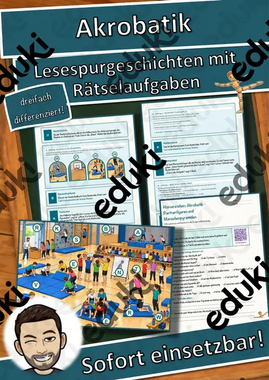
Akrobatik – Partnerfiguren und Menschenpyramiden – Lesespurgeschichte mit Rätselaufgaben (Klasse 6)

Algorithmen im Alltag – Schritt für Schritt zum Ziel – Lesespurgeschichte mit Rätselaufgaben (Klasse 5)

Ampelsteuerung – Zustände und Automaten – Lesespurgeschichte mit Rätselaufgaben (Klasse 7)

Anweisungen genau geben – Programmieren ohne Computer – Lesespurgeschichte mit Rätselaufgaben (Klasse 1)

Arbeit und Leistung – was macht Arbeit wertvoll? – Lesespurgeschichte mit Rätselaufgaben (Klasse 9)

Architektur der Gegenwart – nachhaltig bauen – Lesespurgeschichte mit Rätselaufgaben (Klasse 10)

Aschermittwoch und Fastenzeit – vom Fasching bis Ostern – Lesespurgeschichte mit Rätselaufgaben (Klasse 6)
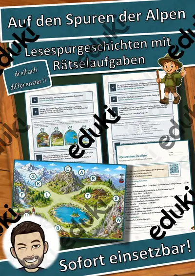
Auf den Spuren der Alpen – Lesespurgeschichte mit Rätselaufgaben (Klasse 5)
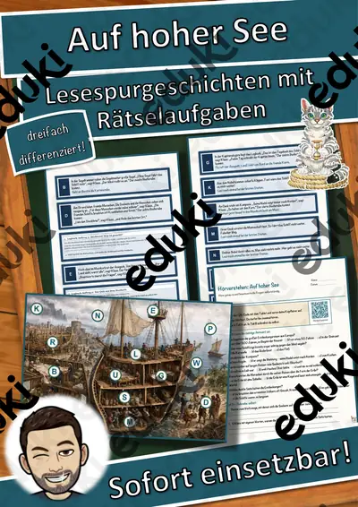
Auf hoher See – Lesespurgeschichte mit Rätselaufgaben (Klasse 5)

Aufbruch in die Renaissance – Lesespurgeschichte mit Rätselaufgaben (Klasse 7)

Aufbruch in unbekannte Welten – Lesespurgeschichte mit Rätselaufgaben (Klasse 7)

Aufwärmen – warum der Körper Anlauf braucht – Lesespurgeschichte mit Rätselaufgaben (Klasse 3)

Ausdauer – der lange Atem – Lesespurgeschichte mit Rätselaufgaben (Klasse 8)

Balladen – unheimliche Geschichten in Versen – Lesespurgeschichte mit Rätselaufgaben (Klasse 7)

Ballspiele – rollen, prellen, werfen, fangen – Lesespurgeschichte mit Rätselaufgaben (Klasse 1)

Barbarazweige – der Brauch am 4. Dezember – Lesespurgeschichte mit Rätselaufgaben (Klasse 3)

Barcodes und QR-Codes – Informationen in Strichen und Punkten – Lesespurgeschichte mit Rätselaufgaben (Klasse 7)
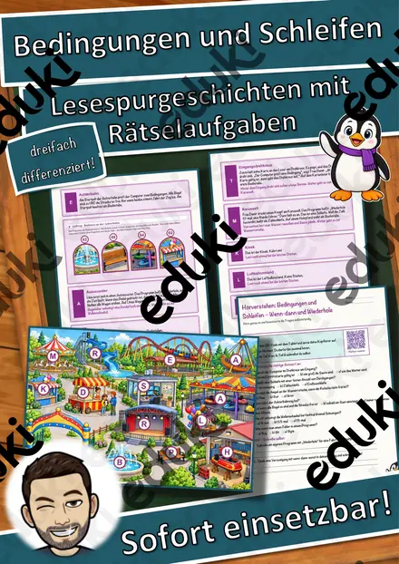
Bedingungen und Schleifen – Wenn-dann und Wiederhole – Lesespurgeschichte mit Rätselaufgaben (Klasse 6)

Bewegungsbaustelle – bauen, klettern, rutschen, springen – Lesespurgeschichte mit Rätselaufgaben (Klasse 1)

Bewegungslandschaft – ein Hindernisparcours aus Alltagsdingen – Lesespurgeschichte mit Rätselaufgaben (Klasse 1)

Bewusst konsumieren – die Reise eines T-Shirts – Lesespurgeschichte mit Rätselaufgaben (Klasse 8)

Bildsprache der Werbung – wie Bilder überzeugen – Lesespurgeschichte mit Rätselaufgaben (Klasse 10)

Binärzahlen – die Sprache der Computer aus 0 und 1 – Lesespurgeschichte mit Rätselaufgaben (Klasse 7)

Blues und Gospel – Stimmen der Hoffnung – Lesespurgeschichte mit Rätselaufgaben (Klasse 9)

Blätterdruck und Herbstfarben – Lesespurgeschichte mit Rätselaufgaben (Klasse 1)

Bodypercussion – Musik mit dem Körper – Lesespurgeschichte mit Rätselaufgaben (Klasse 1)

Bohren an der Ständerbohrmaschine – sicher und genau – Lesespurgeschichte mit Rätselaufgaben (Klasse 7)

Bonfire Night – ein Herbstfest in England – Lesespurgeschichte mit Rätselaufgaben (Klasse 7)
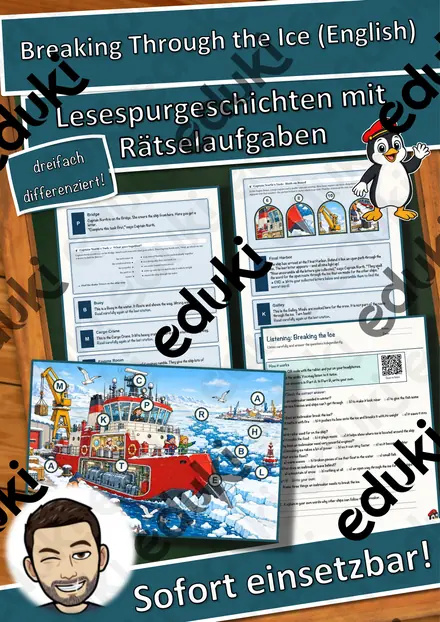
Breaking Through the Ice – Lesespurgeschichte mit Rätselaufgaben auf Englisch (Klasse 6)

Brüche beim Erntefest – Bruchteile erkennen und vergleichen – Lesespurgeschichte mit Rätselaufgaben (Klasse 6)

Bärlauch – Frühlingskraut mit giftigen Doppelgängern – Lesespurgeschichte mit Rätselaufgaben (Klasse 6)

Chatbots und Sprachassistenten – wie Maschinen sprechen – Lesespurgeschichte mit Rätselaufgaben (Klasse 7)

Christmas Tree Farm – Lesespurgeschichte mit Rätselaufgaben auf Englisch (Klasse 6)

Collage und Materialbild – Kunst aus Papier, Stoff und Knöpfen – Lesespurgeschichte mit Rätselaufgaben (Klasse 5)
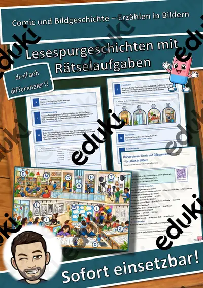
Comic und Bildgeschichte – Erzählen in Bildern – Lesespurgeschichte mit Rätselaufgaben (Klasse 6)

Computer im Alltag – wo überall Computer stecken – Lesespurgeschichte mit Rätselaufgaben (Klasse 1)

Das Akkordeon – Lesespurgeschichte mit Rätselaufgaben (Klasse 8)
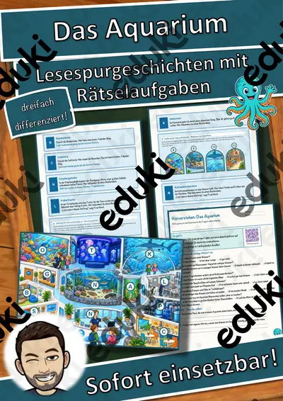
Das Aquarium – Lesespurgeschichte mit Rätselaufgaben (Klasse 4)

Das Atom – Lesespurgeschichte mit Rätselaufgaben (Klasse 8)

Das Auge – Lesespurgeschichte mit Rätselaufgaben (Klasse 7)

Das Automobil – Lesespurgeschichte mit Rätselaufgaben (Klasse 8)

Das Bauhaus – Design für alle – Lesespurgeschichte mit Rätselaufgaben (Klasse 10)

Das Bergwerk – Ein Abenteuer unter Tage – Lesespurgeschichte mit Rätselaufgaben (Klasse 5)

Das Betonwerk – Lesespurgeschichte mit Rätselaufgaben (Klasse 9)

Das Blatt – Lesespurgeschichte mit Rätselaufgaben (Klasse 6)

Das Bodenprofil – Lesespurgeschichte mit Rätselaufgaben (Klasse 8)
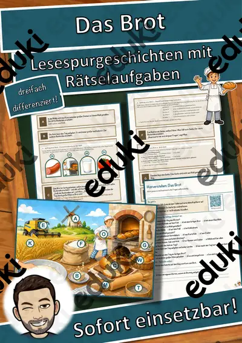
Das Brot – Vom Korn zum Brot – Lesespurgeschichte mit Rätselaufgaben (Klasse 5)

Das Cajón – Lesespurgeschichte mit Rätselaufgaben (Klasse 8)

Das Chamäleon – Lesespurgeschichte mit Rätselaufgaben (Klasse 8)

Das Containerschiff – Lesespurgeschichte mit Rätselaufgaben (Klasse 8)

Das Delta – Lesespurgeschichte mit Rätselaufgaben (Klasse 8)

Das Deutsche Kaiserreich – Lesespurgeschichte mit Rätselaufgaben (Klasse 8)
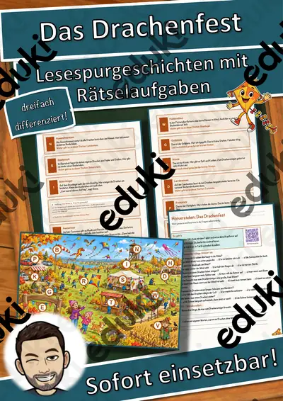
Das Drachenfest – Lesespurgeschichte mit Rätselaufgaben (Klasse 3)

Das Düngemittelwerk – Lesespurgeschichte mit Rätselaufgaben (Klasse 9)

Das Echolot – Lesespurgeschichte mit Rätselaufgaben (Klasse 8)

Das Eichhörnchen – Lesespurgeschichte mit Rätselaufgaben (Klasse 5)
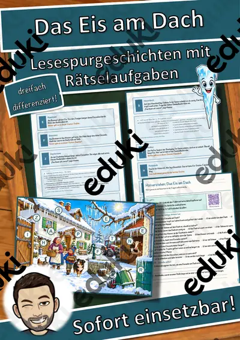
Das Eis am Dach – Lesespurgeschichte mit Rätselaufgaben (Klasse 3)

Das Elektroauto – Lesespurgeschichte mit Rätselaufgaben (Klasse 9)

Das Erdbeben – Lesespurgeschichte mit Rätselaufgaben (Klasse 9)
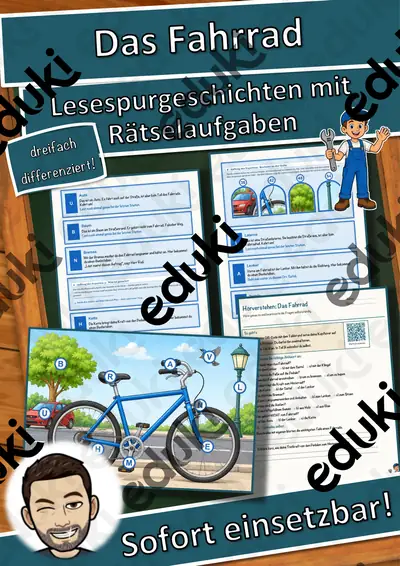
Das Fahrrad – Lesespurgeschichte mit Rätselaufgaben (Klasse 4)

Das Feuerzeug – Lesespurgeschichte mit Rätselaufgaben (Klasse 8)

Das Flugzeug – Lesespurgeschichte mit Rätselaufgaben (Klasse 8)

Das Frühlingsfest – Neujahr in China – Lesespurgeschichte mit Rätselaufgaben (Klasse 5)

Das Galvanisieren – Lesespurgeschichte mit Rätselaufgaben (Klasse 9)

Das Geheimnis der Pyramide (Ägypten) – Lesespurgeschichte mit Rätselaufgaben (Klasse 5)

Das Geheimnis der Ritterburg – Lesespurgeschichte mit Rätselaufgaben (Klasse 6)

Das Geheimnis der Römerstadt – Lesespurgeschichte mit Rätselaufgaben (Klasse 6)

Das Geheimnis der fünf Sinne – Lesespurgeschichte mit Rätselaufgaben (Klasse 5)

Das Geheimnis des Teichs – Lesespurgeschichte mit Rätselaufgaben (Klasse 5)

Das Geheimnis des Waldes (Lebensraum Wald) – Lesespurgeschichte mit Rätselaufgaben (Klasse 5)

Das Geheimnis des Wattenmeers – Lesespurgeschichte mit Rätselaufgaben (Klasse 5)

Das Gehirn – Lesespurgeschichte mit Rätselaufgaben (Klasse 9)

Das Gericht – Lesespurgeschichte mit Rätselaufgaben (Klasse 9)

Das Gewissen und die innere Stimme – Lesespurgeschichte mit Rätselaufgaben (Klasse 10)
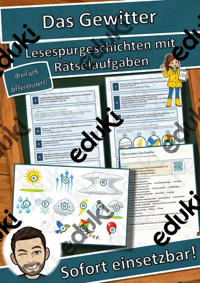
Das Gewitter – Lesespurgeschichte mit Rätselaufgaben (Klasse 6)

Das Gewächshaus – Lesespurgeschichte mit Rätselaufgaben (Klasse 8)

Das Gezeitenkraftwerk – Lesespurgeschichte mit Rätselaufgaben (Klasse 9)

Das Handwerk und die Zünfte – Lesespurgeschichte mit Rätselaufgaben (Klasse 7)

Das Haus der Grundrechte – Lesespurgeschichte mit Rätselaufgaben (Klasse 9)

Das Herz – Lesespurgeschichte mit Rätselaufgaben (Klasse 8)

Das Hochgebirge – Lesespurgeschichte mit Rätselaufgaben (Klasse 8)

Das Hochmoor – Lesespurgeschichte mit Rätselaufgaben (Klasse 8)

Das Hormonsystem – Lesespurgeschichte mit Rätselaufgaben (Klasse 9)
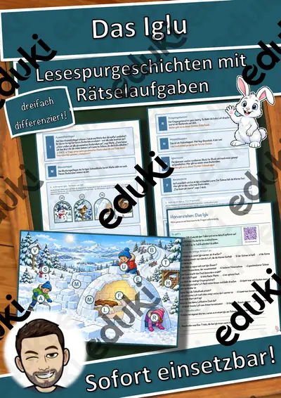
Das Iglu – Lesespurgeschichte mit Rätselaufgaben (Klasse 3)

Das Immunsystem – Lesespurgeschichte mit Rätselaufgaben (Klasse 8)

Das Jugendschutzgesetz – Ausgehzeiten, Alkohol, Altersfreigaben – Lesespurgeschichte mit Rätselaufgaben (Klasse 8)

Das Kernkraftwerk – Lesespurgeschichte mit Rätselaufgaben (Klasse 9)

Das Klavier – Lesespurgeschichte mit Rätselaufgaben (Klasse 8)

Das Kloster im Mittelalter – Lesespurgeschichte mit Rätselaufgaben (Klasse 6)

Das Kniegelenk – Lesespurgeschichte mit Rätselaufgaben (Klasse 8)

Das Kohlekraftwerk – Lesespurgeschichte mit Rätselaufgaben (Klasse 9)

Das Korallenriff – Lesespurgeschichte mit Rätselaufgaben (Klasse 8)
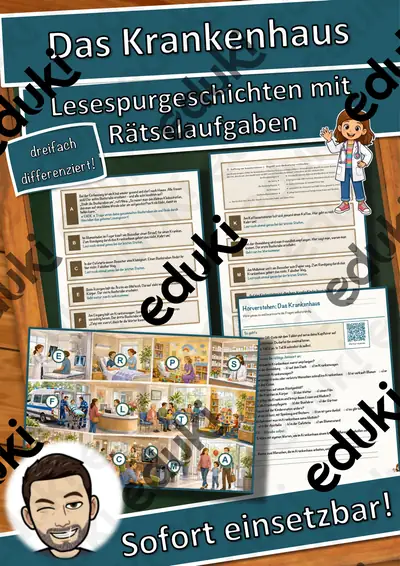
Das Krankenhaus – Lesespurgeschichte mit Rätselaufgaben (Klasse 2)

Das Krokodil – Lesespurgeschichte mit Rätselaufgaben (Klasse 8)

Das Labor – Lesespurgeschichte mit Rätselaufgaben (Klasse 8)

Das Labyrinth des Minotaurus – Lesespurgeschichte mit Rätselaufgaben (Klasse 6)
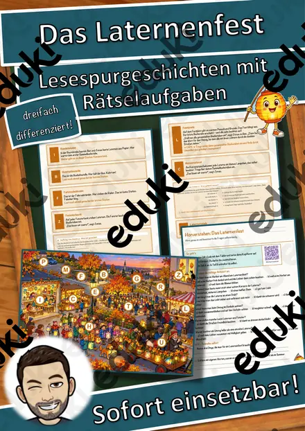
Das Laternenfest – Lesespurgeschichte mit Rätselaufgaben (Klasse 3)

Das Lebkuchenhaus – Quader, Netz und Oberfläche – Lesespurgeschichte mit Rätselaufgaben (Klasse 7)

Das Licht und die Farben – Lesespurgeschichte mit Rätselaufgaben (Klasse 7)
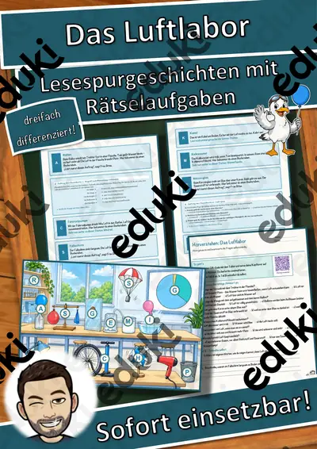
Das Luftlabor – Lesespurgeschichte mit Rätselaufgaben (Klasse 5)

Das Luftschiff – Lesespurgeschichte mit Rätselaufgaben (Klasse 8)

Das Lymphsystem – Lesespurgeschichte mit Rätselaufgaben (Klasse 9)

Das Martinsfeuer – was ein Feuer braucht und wie man es löscht – Lesespurgeschichte mit Rätselaufgaben (Klasse 8)

Das Mikroskop – Lesespurgeschichte mit Rätselaufgaben (Klasse 8)

Das Mitochondrium – Lesespurgeschichte mit Rätselaufgaben (Klasse 9)

Das Moor – Lesespurgeschichte mit Rätselaufgaben (Klasse 8)

Das Musical – Singen, Spielen, Tanzen – Lesespurgeschichte mit Rätselaufgaben (Klasse 8)

Das Nachrichtenstudio – Lesespurgeschichte mit Rätselaufgaben (Klasse 9)

Das Naturkundemuseum – Lesespurgeschichte mit Rätselaufgaben (Klasse 5)

Das Nervensystem – Lesespurgeschichte mit Rätselaufgaben (Klasse 9)

Das Ohr – Lesespurgeschichte mit Rätselaufgaben (Klasse 7)

Das Papier – Vom Baum zum Papier – Lesespurgeschichte mit Rätselaufgaben (Klasse 5)

Das Pausenfrühstück – fit in den Schultag – Lesespurgeschichte mit Rätselaufgaben (Klasse 1)

Das Pferd – Lesespurgeschichte mit Rätselaufgaben (Klasse 5)

Das Planetarium – Lesespurgeschichte mit Rätselaufgaben (Klasse 5)

Das Porträt – Gesichter zeichnen und verstehen – Lesespurgeschichte mit Rätselaufgaben (Klasse 7)

Das Pumpspeicherkraftwerk – Lesespurgeschichte mit Rätselaufgaben (Klasse 8)

Das Rathaus – Lesespurgeschichte mit Rätselaufgaben (Klasse 8)

Das Reh – Lesespurgeschichte mit Rätselaufgaben (Klasse 8)

Das Reich Karls des Großen – Lesespurgeschichte mit Rätselaufgaben (Klasse 6)

Das Riesenrad – Lesespurgeschichte mit Rätselaufgaben (Klasse 9)

Das Rondo und musikalische Formen – wie Musik gebaut ist – Lesespurgeschichte mit Rätselaufgaben (Klasse 6)

Das Rückenmark – Lesespurgeschichte mit Rätselaufgaben (Klasse 9)

Das Salz – Lesespurgeschichte mit Rätselaufgaben (Klasse 8)

Das Schaf – Lesespurgeschichte mit Rätselaufgaben (Klasse 5)

Das Schattentheater – Lesespurgeschichte mit Rätselaufgaben (Klasse 5)

Das Schiffshebewerk – Lesespurgeschichte mit Rätselaufgaben (Klasse 8)

Das Schlagzeug – Lesespurgeschichte mit Rätselaufgaben (Klasse 8)
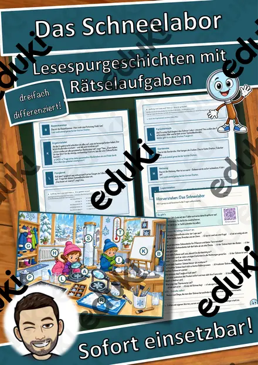
Das Schneelabor – Lesespurgeschichte mit Rätselaufgaben (Klasse 3)

Das Schulfest – Lesespurgeschichte mit Rätselaufgaben (Klasse 6)
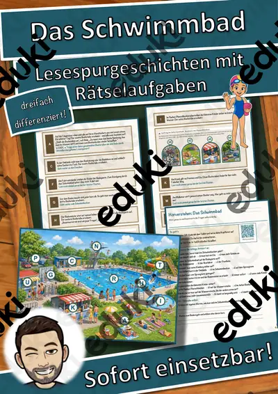
Das Schwimmbad – Lesespurgeschichte mit Rätselaufgaben (Klasse 3)
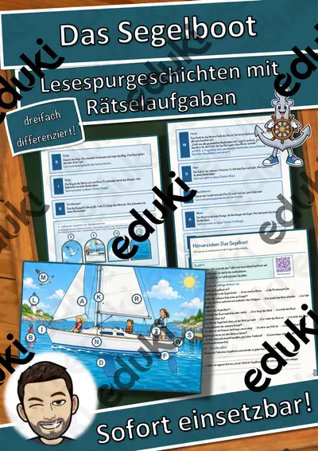
Das Segelboot – Lesespurgeschichte mit Rätselaufgaben (Klasse 4)

Das Segelschiff – Lesespurgeschichte mit Rätselaufgaben (Klasse 8)

Das Sinfonieorchester – Lesespurgeschichte mit Rätselaufgaben (Klasse 8)

Das Skelett – Lesespurgeschichte mit Rätselaufgaben (Klasse 7)
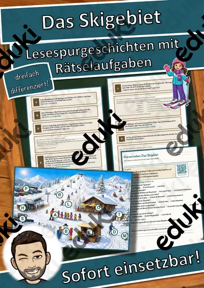
Das Skigebiet – Lesespurgeschichte mit Rätselaufgaben (Klasse 2)

Das Spiegelkabinett – Lesespurgeschichte mit Rätselaufgaben (Klasse 5)
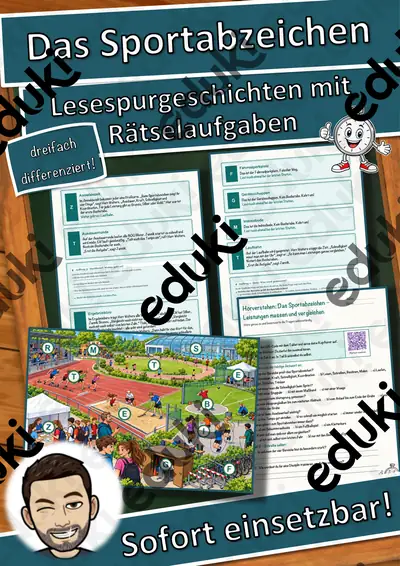
Das Sportabzeichen – Leistungen messen und vergleichen – Lesespurgeschichte mit Rätselaufgaben (Klasse 7)
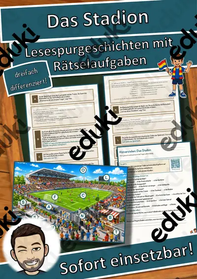
Das Stadion – Lesespurgeschichte mit Rätselaufgaben (Klasse 2)

Das Stahlwerk – Lesespurgeschichte mit Rätselaufgaben (Klasse 9)
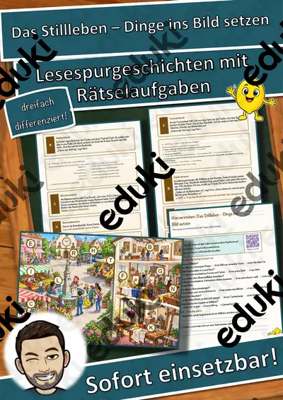
Das Stillleben – Dinge ins Bild setzen – Lesespurgeschichte mit Rätselaufgaben (Klasse 6)

Das Streichholz – Lesespurgeschichte mit Rätselaufgaben (Klasse 8)

Das Stromnetz – Lesespurgeschichte mit Rätselaufgaben (Klasse 9)
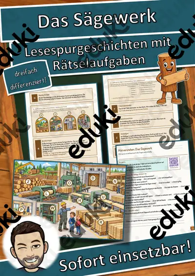
Das Sägewerk – Lesespurgeschichte mit Rätselaufgaben (Klasse 4)

Das Teleskop – Lesespurgeschichte mit Rätselaufgaben (Klasse 8)

Das Thermometer – Lesespurgeschichte mit Rätselaufgaben (Klasse 8)

Das Tiefdruckgebiet – Lesespurgeschichte mit Rätselaufgaben (Klasse 8)

Das Tonstudio – Lesespurgeschichte mit Rätselaufgaben (Klasse 9)
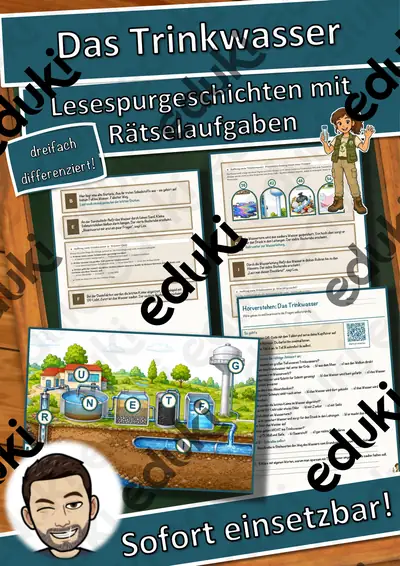
Das Trinkwasser – Lesespurgeschichte mit Rätselaufgaben (Klasse 6)

Das U-Boot – Lesespurgeschichte mit Rätselaufgaben (Klasse 8)

Das Vibraphon – Lesespurgeschichte mit Rätselaufgaben (Klasse 8)

Das Vogelei – Lesespurgeschichte mit Rätselaufgaben (Klasse 8)

Das Vogelfutterhaus – Lesespurgeschichte mit Rätselaufgaben (Klasse 5)

Das Wasserkraftwerk – Lesespurgeschichte mit Rätselaufgaben (Klasse 8)
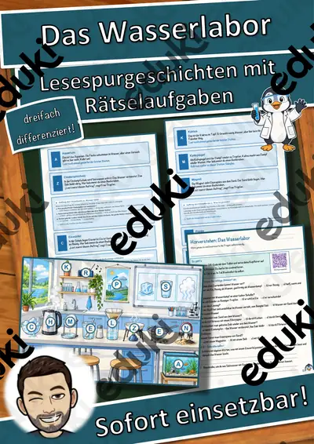
Das Wasserlabor – Lesespurgeschichte mit Rätselaufgaben (Klasse 5)

Das Wasserwerk – Lesespurgeschichte mit Rätselaufgaben (Klasse 8)

Das Weihnachtsoratorium – Chor, Arie und Rezitativ – Lesespurgeschichte mit Rätselaufgaben (Klasse 7)

Das Wildschwein – Lesespurgeschichte mit Rätselaufgaben (Klasse 8)

Das Windrad – Lesespurgeschichte mit Rätselaufgaben (Klasse 9)
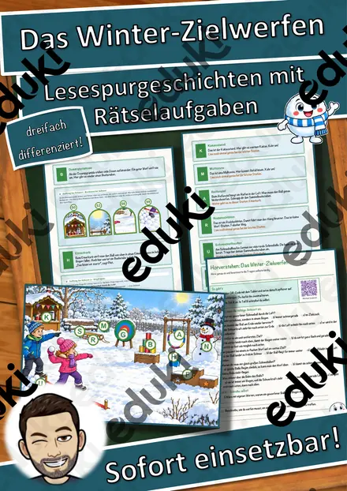
Das Winter-Zielwerfen – Lesespurgeschichte mit Rätselaufgaben (Klasse 3)
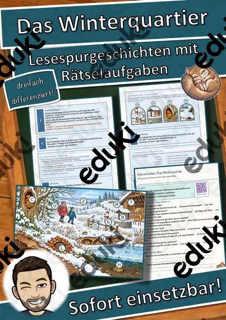
Das Winterquartier – Lesespurgeschichte mit Rätselaufgaben (Klasse 3)

Das Xylophon – Lesespurgeschichte mit Rätselaufgaben (Klasse 8)

Das Zeitlabor – wie Uhren die Zeit messen und warum wir umstellen – Lesespurgeschichte mit Rätselaufgaben (Klasse 8)

Das Zementwerk – Lesespurgeschichte mit Rätselaufgaben (Klasse 9)

Das antike Rom – die Republik – Lesespurgeschichte mit Rätselaufgaben (Klasse 7)

Das neue Smartphone – sicher einrichten – Lesespurgeschichte mit Rätselaufgaben (Klasse 7)
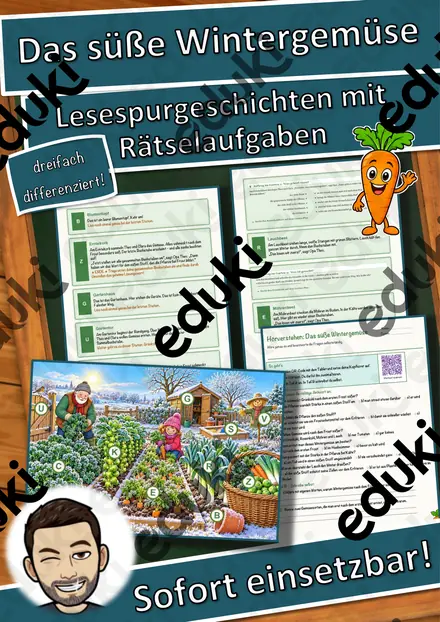
Das süße Wintergemüse – Lesespurgeschichte mit Rätselaufgaben (Klasse 3)

Das weiße Gold – Lesespurgeschichte mit Rätselaufgaben (Klasse 6)

Dateien und Ordner – Ordnung auf dem Computer – Lesespurgeschichte mit Rätselaufgaben (Klasse 5)

Datenbanken – Ordnung im Fundbüro – Lesespurgeschichte mit Rätselaufgaben (Klasse 10)

Datendetektive – Daten sammeln, zählen, darstellen – Lesespurgeschichte mit Rätselaufgaben (Klasse 3)

Datenkompression – wie Dateien klein werden – Lesespurgeschichte mit Rätselaufgaben (Klasse 10)

Deepfakes – gefälschte Bilder und Videos erkennen – Lesespurgeschichte mit Rätselaufgaben (Klasse 10)

Den Tisch festlich decken – Gedeck, Tischsitten und Tischschmuck – Lesespurgeschichte mit Rätselaufgaben (Klasse 6)

Der 3D-Druck – In der Technik-Werkstatt – Lesespurgeschichte mit Rätselaufgaben (Klasse 9)

Der Adler – Lesespurgeschichte mit Rätselaufgaben (Klasse 8)
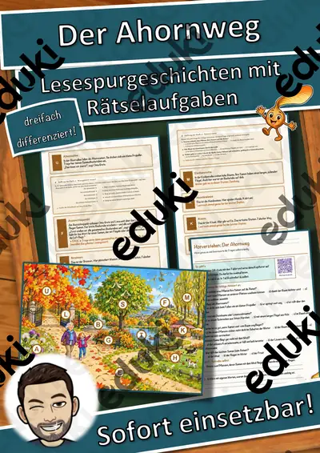
Der Ahornweg – Lesespurgeschichte mit Rätselaufgaben (Klasse 3)

Der Airbag – Lesespurgeschichte mit Rätselaufgaben (Klasse 9)

Der Ameisenhaufen – Lesespurgeschichte mit Rätselaufgaben (Klasse 8)

Der Apfelbaum – Lesespurgeschichte mit Rätselaufgaben (Klasse 8)
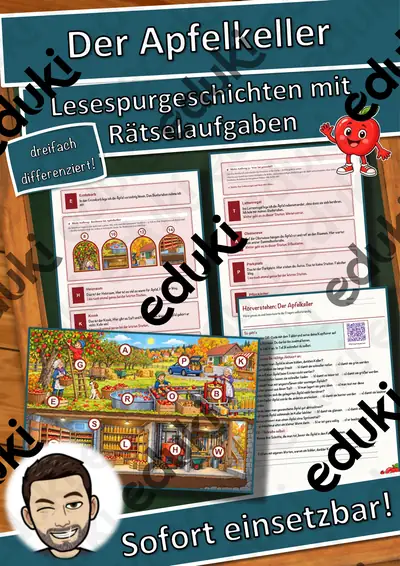
Der Apfelkeller – Lesespurgeschichte mit Rätselaufgaben (Klasse 3)

Der Atombau – Lesespurgeschichte mit Rätselaufgaben (Klasse 8)

Der Aufzug – Lesespurgeschichte mit Rätselaufgaben (Klasse 8)

Der Ausbildungsvertrag – Probezeit, Urlaub, Rechte und Pflichten – Lesespurgeschichte mit Rätselaufgaben (Klasse 9)

Der Backofen – Lesespurgeschichte mit Rätselaufgaben (Klasse 8)

Der Bagger – Lesespurgeschichte mit Rätselaufgaben (Klasse 8)

Der Bahnhof – Eine Reise mit der Bahn – Lesespurgeschichte mit Rätselaufgaben (Klasse 5)

Der Bau der Kathedrale – Lesespurgeschichte mit Rätselaufgaben (Klasse 7)

Der Bauernhof – Lesespurgeschichte mit Rätselaufgaben (Klasse 7)

Der Baukran – Lesespurgeschichte mit Rätselaufgaben (Klasse 8)

Der Baum – Lesespurgeschichte mit Rätselaufgaben (Klasse 6)

Der Baumstamm – Lesespurgeschichte mit Rätselaufgaben (Klasse 8)

Der Bergsee – Lesespurgeschichte mit Rätselaufgaben (Klasse 8)

Der Biber – Lesespurgeschichte mit Rätselaufgaben (Klasse 8)

Der Bleiakku – Lesespurgeschichte mit Rätselaufgaben (Klasse 9)

Der Blitzableiter – Lesespurgeschichte mit Rätselaufgaben (Klasse 9)

Der Blutkreislauf – Lesespurgeschichte mit Rätselaufgaben (Klasse 7)

Der Boden – Lesespurgeschichte mit Rätselaufgaben (Klasse 5)

Der Braunkohletagebau – Lesespurgeschichte mit Rätselaufgaben (Klasse 8)

Der Brunnen – Lesespurgeschichte mit Rätselaufgaben (Klasse 8)

Der Bundestag – Lesespurgeschichte mit Rätselaufgaben (Klasse 8)

Der Bunsenbrenner – Lesespurgeschichte mit Rätselaufgaben (Klasse 8)

Der Bär – Lesespurgeschichte mit Rätselaufgaben (Klasse 8)
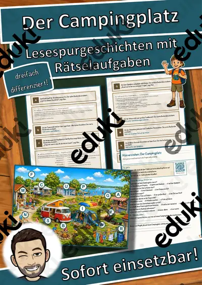
Der Campingplatz – Lesespurgeschichte mit Rätselaufgaben (Klasse 4)

Der Canyon – Lesespurgeschichte mit Rätselaufgaben (Klasse 8)
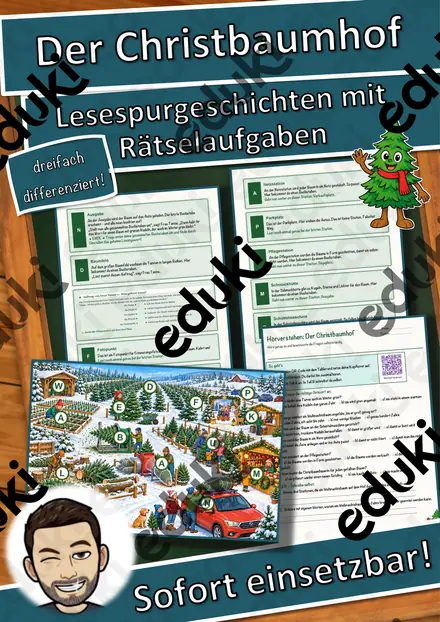
Der Christbaumhof – Lesespurgeschichte mit Rätselaufgaben (Klasse 3)

Der Computer – Lesespurgeschichte mit Rätselaufgaben (Klasse 7)

Der Dachs – Lesespurgeschichte mit Rätselaufgaben (Klasse 8)

Der Deich – Lesespurgeschichte mit Rätselaufgaben (Klasse 8)

Der Delfin – Lesespurgeschichte mit Rätselaufgaben (Klasse 8)

Der Dickdarm – Lesespurgeschichte mit Rätselaufgaben (Klasse 8)

Der Dudelsack – Lesespurgeschichte mit Rätselaufgaben (Klasse 8)

Der Dynamo – Lesespurgeschichte mit Rätselaufgaben (Klasse 9)

Der Dünndarm – Lesespurgeschichte mit Rätselaufgaben (Klasse 8)

Der Eisberg – Lesespurgeschichte mit Rätselaufgaben (Klasse 8)
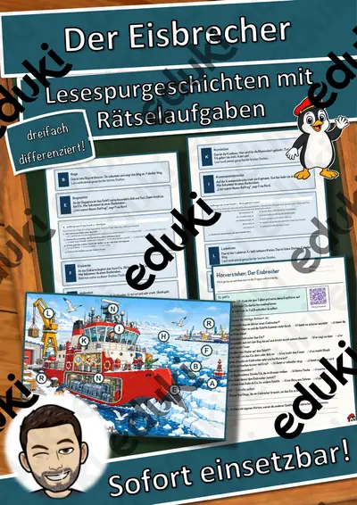
Der Eisbrecher – Lesespurgeschichte mit Rätselaufgaben (Klasse 3)
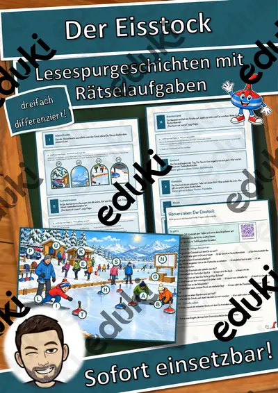
Der Eisstock – Lesespurgeschichte mit Rätselaufgaben (Klasse 3)

Der Elektromotor – Lesespurgeschichte mit Rätselaufgaben (Klasse 8)

Der Equal Pay Day – warum Frauen weniger verdienen – Lesespurgeschichte mit Rätselaufgaben (Klasse 9)

Der Erste Weltkrieg – vom Kriegsbeginn zum Waffenstillstand – Lesespurgeschichte mit Rätselaufgaben (Klasse 9)

Der Fahrraddynamo – Lesespurgeschichte mit Rätselaufgaben (Klasse 8)

Der Fallschirm – Lesespurgeschichte mit Rätselaufgaben (Klasse 8)

Der Farbkreis – Lesespurgeschichte mit Rätselaufgaben (Klasse 5)

Der Feuerlöscher – Lesespurgeschichte mit Rätselaufgaben (Klasse 8)

Der Feuersalamander – Lesespurgeschichte mit Rätselaufgaben (Klasse 8)

Der Fisch – Lesespurgeschichte mit Rätselaufgaben (Klasse 5)

Der Fjord – Lesespurgeschichte mit Rätselaufgaben (Klasse 8)

Der Fliegenpilz – Lesespurgeschichte mit Rätselaufgaben (Klasse 8)

Der Flohmarkt – Lesespurgeschichte mit Rätselaufgaben (Klasse 7)

Der Flughafen – Lesespurgeschichte mit Rätselaufgaben (Klasse 8)

Der Fluss – Lesespurgeschichte mit Rätselaufgaben (Klasse 8)

Der Fotoapparat – Lesespurgeschichte mit Rätselaufgaben (Klasse 8)

Der Frosch – Lesespurgeschichte mit Rätselaufgaben (Klasse 5)

Der Fuchs – Lesespurgeschichte mit Rätselaufgaben (Klasse 8)

Der Gasbrenner – Lesespurgeschichte mit Rätselaufgaben (Klasse 8)

Der Generator – Lesespurgeschichte mit Rätselaufgaben (Klasse 9)

Der Geysir – Lesespurgeschichte mit Rätselaufgaben (Klasse 8)

Der Gletscher – Lesespurgeschichte mit Rätselaufgaben (Klasse 8)

Der Haartrockner – Lesespurgeschichte mit Rätselaufgaben (Klasse 8)

Der Hackathon – im Team eine digitale Idee entwickeln – Lesespurgeschichte mit Rätselaufgaben (Klasse 10)

Der Hafen – Lesespurgeschichte mit Rätselaufgaben (Klasse 8)

Der Hai – Lesespurgeschichte mit Rätselaufgaben (Klasse 8)

Der Hamster – Lesespurgeschichte mit Rätselaufgaben (Klasse 8)

Der Hase – Lesespurgeschichte mit Rätselaufgaben (Klasse 8)

Der Heißluftballon – Lesespurgeschichte mit Rätselaufgaben (Klasse 8)
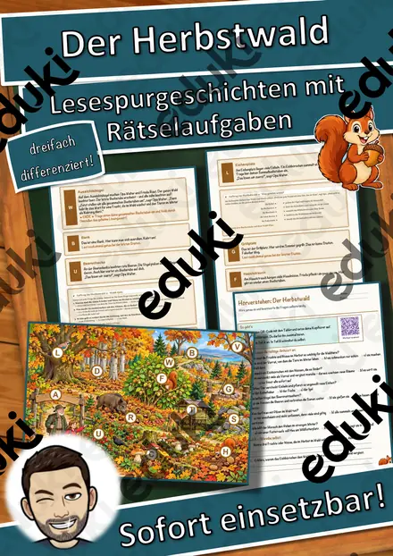
Der Herbstwald – Lesespurgeschichte mit Rätselaufgaben (Klasse 3)

Der Hirsch – Lesespurgeschichte mit Rätselaufgaben (Klasse 8)

Der Hirschkäfer – Lesespurgeschichte mit Rätselaufgaben (Klasse 8)

Der Hochofen – Lesespurgeschichte mit Rätselaufgaben (Klasse 9)

Der Hubschrauber – Lesespurgeschichte mit Rätselaufgaben (Klasse 8)

Der Hummer – Lesespurgeschichte mit Rätselaufgaben (Klasse 8)

Der Hund – ein treues Haustier – Lesespurgeschichte mit Rätselaufgaben (Klasse 5)

Der Hund – unser treues Haustier – Lesespurgeschichte mit Rätselaufgaben (Klasse 5)

Der Hungerwinter 1947 – Leben nach dem Krieg – Lesespurgeschichte mit Rätselaufgaben (Klasse 9)

Der Hurrikan – Lesespurgeschichte mit Rätselaufgaben (Klasse 9)

Der Igel – Lesespurgeschichte mit Rätselaufgaben (Klasse 6)

Der Jahresrückblick – eine Radiosendung entsteht – Lesespurgeschichte mit Rätselaufgaben (Klasse 7)
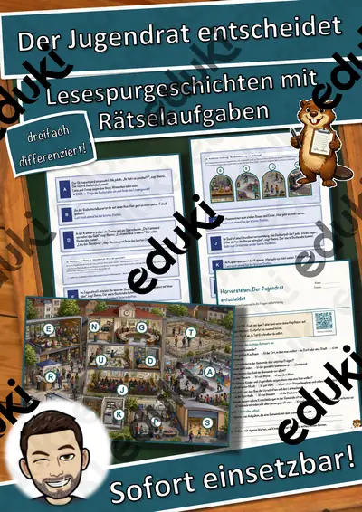
Der Jugendrat entscheidet – Lesespurgeschichte mit Rätselaufgaben (Klasse 6)

Der Kaktus – Lesespurgeschichte mit Rätselaufgaben (Klasse 8)

Der Kalender – wie Caesar und Gregor das Jahr ordneten – Lesespurgeschichte mit Rätselaufgaben (Klasse 7)

Der Kalkkreislauf – Lesespurgeschichte mit Rätselaufgaben (Klasse 9)

Der Kaminofen – Verbrennung und Kohlenmonoxid – Lesespurgeschichte mit Rätselaufgaben (Klasse 8)

Der Kanon – eine Melodie, viele Stimmen – Lesespurgeschichte mit Rätselaufgaben (Klasse 3)
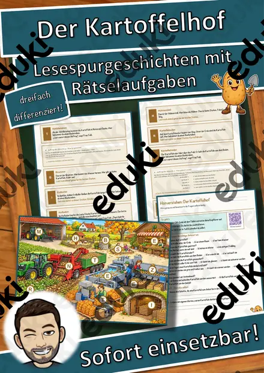
Der Kartoffelhof – Lesespurgeschichte mit Rätselaufgaben (Klasse 3)

Der Katalysator – Lesespurgeschichte mit Rätselaufgaben (Klasse 9)

Der Kehlkopf – Lesespurgeschichte mit Rätselaufgaben (Klasse 8)

Der Klimawandel – Lesespurgeschichte mit Rätselaufgaben (Klasse 8)

Der Knochen – Lesespurgeschichte mit Rätselaufgaben (Klasse 8)

Der Kohlenstoffkreislauf – Lesespurgeschichte mit Rätselaufgaben (Klasse 9)

Der Kompass – Lesespurgeschichte mit Rätselaufgaben (Klasse 8)

Der Kompost – Lesespurgeschichte mit Rätselaufgaben (Klasse 8)

Der Komposthaufen – Lesespurgeschichte mit Rätselaufgaben (Klasse 8)

Der Konzertsaal – Lesespurgeschichte mit Rätselaufgaben (Klasse 8)

Der Kran – Lesespurgeschichte mit Rätselaufgaben (Klasse 8)

Der Kranich – Lesespurgeschichte mit Rätselaufgaben (Klasse 8)

Der Kühlschrank – Lesespurgeschichte mit Rätselaufgaben (Klasse 8)
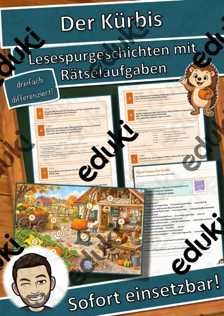
Der Kürbis – Lesespurgeschichte mit Rätselaufgaben (Klasse 3)
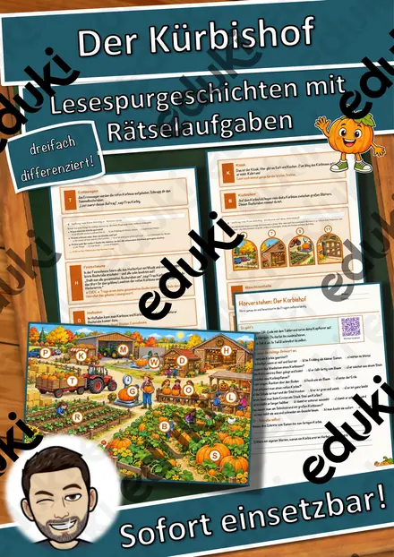
Der Kürbishof – Lesespurgeschichte mit Rätselaufgaben (Klasse 3)

Der Lachs – Lesespurgeschichte mit Rätselaufgaben (Klasse 8)

Der Landtag – Lesespurgeschichte mit Rätselaufgaben (Klasse 9)

Der Laser – Lesespurgeschichte mit Rätselaufgaben (Klasse 9)

Der Lautsprecher – Lesespurgeschichte mit Rätselaufgaben (Klasse 9)

Der Leserbrief – meine Meinung in der Zeitung – Lesespurgeschichte mit Rätselaufgaben (Klasse 8)

Der Leuchtturm – Lesespurgeschichte mit Rätselaufgaben (Klasse 8)

Der Luchs – Lesespurgeschichte mit Rätselaufgaben (Klasse 8)

Der Löwenzahn – Lesespurgeschichte mit Rätselaufgaben (Klasse 8)

Der Magen – Lesespurgeschichte mit Rätselaufgaben (Klasse 8)

Der Magnetismus – Lesespurgeschichte mit Rätselaufgaben (Klasse 7)

Der Mais – Lesespurgeschichte mit Rätselaufgaben (Klasse 8)

Der Malerbetrieb – Ein Praktikum beim Maler – Lesespurgeschichte mit Rätselaufgaben (Klasse 9)

Der Mann aus dem Eis – ein Gletscherfund aus der Jungsteinzeit – Lesespurgeschichte mit Rätselaufgaben (Klasse 6)
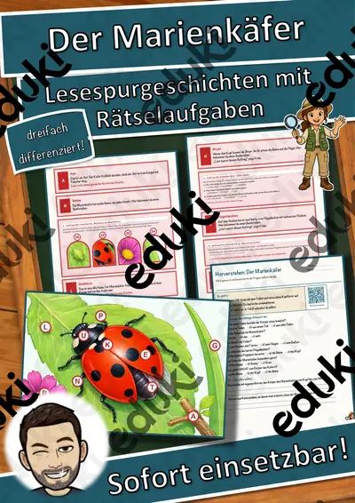
Der Marienkäfer – Lesespurgeschichte mit Rätselaufgaben (Klasse 4)

Der Mauerfall – vom geteilten Land zur Einheit – Lesespurgeschichte mit Rätselaufgaben (Klasse 10)

Der Maulwurf – Lesespurgeschichte mit Rätselaufgaben (Klasse 5)

Der Meeresboden – Lesespurgeschichte mit Rätselaufgaben (Klasse 8)

Der Mietvertrag – die erste eigene Wohnung – Lesespurgeschichte mit Rätselaufgaben (Klasse 9)

Der Mischwald – Lesespurgeschichte mit Rätselaufgaben (Klasse 7)

Der Mond – Lesespurgeschichte mit Rätselaufgaben (Klasse 7)

Der Muskel – Lesespurgeschichte mit Rätselaufgaben (Klasse 8)

Der Mäander – Lesespurgeschichte mit Rätselaufgaben (Klasse 8)

Der Mähdrescher – Lesespurgeschichte mit Rätselaufgaben (Klasse 8)

Der Nachthimmel – Eine Reise zu den Sternen – Lesespurgeschichte mit Rätselaufgaben (Klasse 5)

Der Nationalpark – Lesespurgeschichte mit Rätselaufgaben (Klasse 5)

Der Nebel – Lesespurgeschichte mit Rätselaufgaben (Klasse 8)

Der Nistkasten – ein Zuhause für Meisen bauen – Lesespurgeschichte mit Rätselaufgaben (Klasse 5)

Der Nordpol – Lesespurgeschichte mit Rätselaufgaben (Klasse 4)
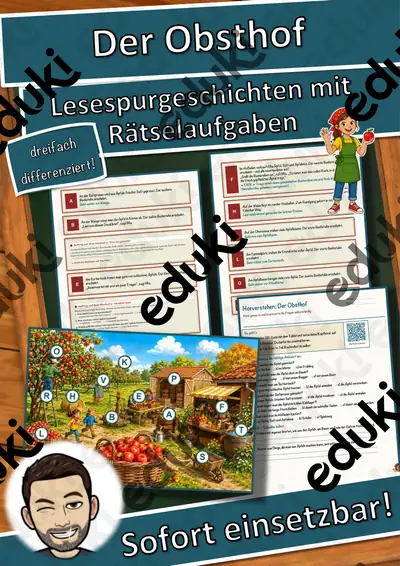
Der Obsthof – Lesespurgeschichte mit Rätselaufgaben (Klasse 4)

Der Permafrost – Lesespurgeschichte mit Rätselaufgaben (Klasse 9)

Der Pilz – Lesespurgeschichte mit Rätselaufgaben (Klasse 5)

Der Pinguin – Lesespurgeschichte mit Rätselaufgaben (Klasse 8)

Der Pirat – Ein Abenteuer auf hoher See – Lesespurgeschichte mit Rätselaufgaben (Klasse 5)

Der Plattenspieler – Lesespurgeschichte mit Rätselaufgaben (Klasse 8)

Der Rauchmelder – Lesespurgeschichte mit Rätselaufgaben (Klasse 8)

Der Regenbogen – Lesespurgeschichte mit Rätselaufgaben (Klasse 6)

Der Regenwurm – Lesespurgeschichte mit Rätselaufgaben (Klasse 8)
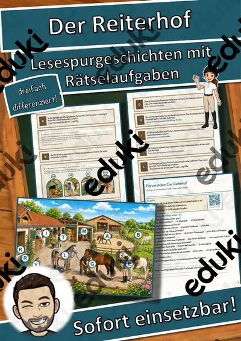
Der Reiterhof – Lesespurgeschichte mit Rätselaufgaben (Klasse 3)

Der Rost – Lesespurgeschichte mit Rätselaufgaben (Klasse 9)

Der Salzstock – Lesespurgeschichte mit Rätselaufgaben (Klasse 9)

Der Satellit – Lesespurgeschichte mit Rätselaufgaben (Klasse 8)
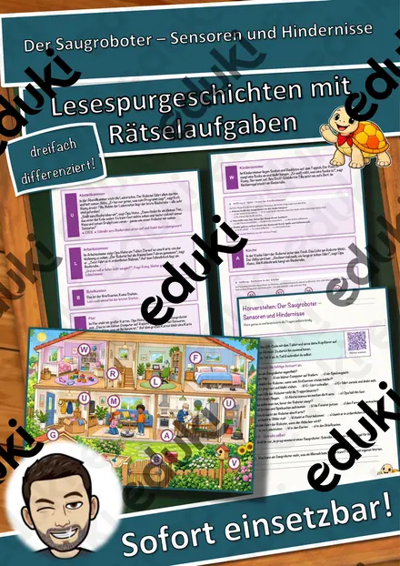
Der Saugroboter – Sensoren und Hindernisse – Lesespurgeschichte mit Rätselaufgaben (Klasse 3)
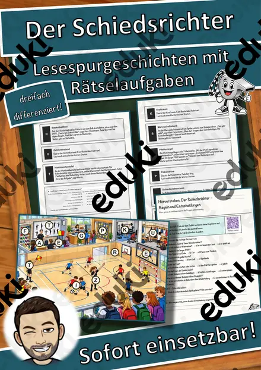
Der Schiedsrichter – Regeln und Entscheidungen – Lesespurgeschichte mit Rätselaufgaben (Klasse 6)
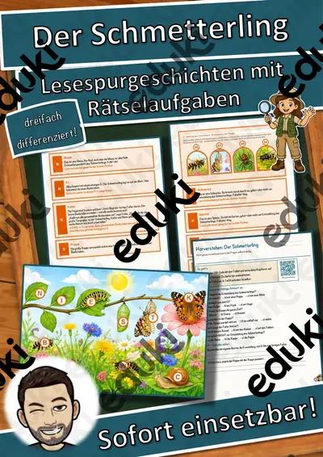
Der Schmetterling – Lesespurgeschichte mit Rätselaufgaben (Klasse 4)

Der Schnellkochtopf – Lesespurgeschichte mit Rätselaufgaben (Klasse 8)
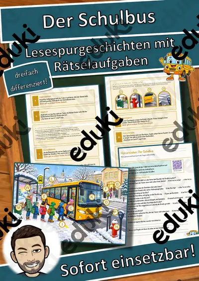
Der Schulbus – Lesespurgeschichte mit Rätselaufgaben (Klasse 3)
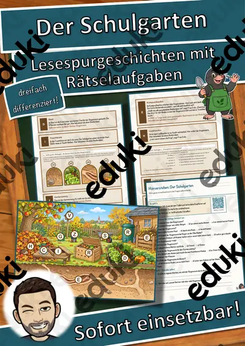
Der Schulgarten – Lesespurgeschichte mit Rätselaufgaben (Klasse 3)

Der Schulserver – Lesespurgeschichte mit Rätselaufgaben (Klasse 8)

Der Schädel – Lesespurgeschichte mit Rätselaufgaben (Klasse 8)

Der Sonnenkönig – Lesespurgeschichte mit Rätselaufgaben (Klasse 7)

Der Specht – Lesespurgeschichte mit Rätselaufgaben (Klasse 5)
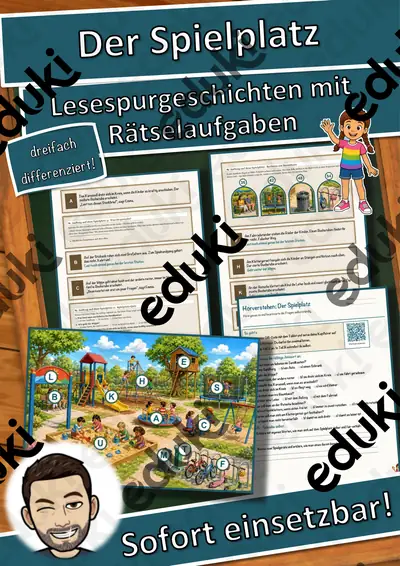
Der Spielplatz – Lesespurgeschichte mit Rätselaufgaben (Klasse 2)
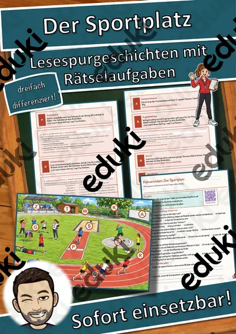
Der Sportplatz – Lesespurgeschichte mit Rätselaufgaben (Klasse 6)

Der Sportverein – mitmachen, mithelfen, mitbestimmen – Lesespurgeschichte mit Rätselaufgaben (Klasse 8)

Der Staubsauger – Lesespurgeschichte mit Rätselaufgaben (Klasse 8)

Der Staudamm – Lesespurgeschichte mit Rätselaufgaben (Klasse 9)

Der Steinbruch – Lesespurgeschichte mit Rätselaufgaben (Klasse 8)

Der Storch – Lesespurgeschichte mit Rätselaufgaben (Klasse 8)
Der Strand – Ein Tag am Meer – Lesespurgeschichte mit Rätselaufgaben (Klasse 5)

Der Stromkreis – Lesespurgeschichte mit Rätselaufgaben (Klasse 7)
Der Supermarkt – Ein Praktikum im Einzelhandel – Lesespurgeschichte mit Rätselaufgaben (Klasse 10)

Der Tafelberg – Lesespurgeschichte mit Rätselaufgaben (Klasse 9)

Der Tag der Menschenrechte – Rechte für alle Menschen – Lesespurgeschichte mit Rätselaufgaben (Klasse 10)

Der Tag der Muttersprache – viele Sprachen in meiner Klasse – Lesespurgeschichte mit Rätselaufgaben (Klasse 5)

Der Tagebau – Lesespurgeschichte mit Rätselaufgaben (Klasse 9)

Der Tintenfisch – Lesespurgeschichte mit Rätselaufgaben (Klasse 8)

Der Toaster – Lesespurgeschichte mit Rätselaufgaben (Klasse 8)

Der Transformator – Lesespurgeschichte mit Rätselaufgaben (Klasse 9)

Der Treibhauseffekt – Lesespurgeschichte mit Rätselaufgaben (Klasse 9)

Der Tsunami – Lesespurgeschichte mit Rätselaufgaben (Klasse 8)

Der Tunnel – Lesespurgeschichte mit Rätselaufgaben (Klasse 8)

Der Turmdrehkran – Lesespurgeschichte mit Rätselaufgaben (Klasse 8)

Der Verbrennungsmotor – Lesespurgeschichte mit Rätselaufgaben (Klasse 9)

Der Viertaktmotor – Lesespurgeschichte mit Rätselaufgaben (Klasse 9)

Der Vogel – Lesespurgeschichte mit Rätselaufgaben (Klasse 7)

Der Vogelzug – Lesespurgeschichte mit Rätselaufgaben (Klasse 7)

Der Vorlesetag – gut vorlesen, gespannt zuhören – Lesespurgeschichte mit Rätselaufgaben (Klasse 6)
Der Vulkan – Lesespurgeschichte mit Rätselaufgaben (Klasse 7)
Der Waldboden – Lesespurgeschichte mit Rätselaufgaben (Klasse 3)

Der Wasserfall – Lesespurgeschichte mit Rätselaufgaben (Klasse 8)

Der Wasserkocher – Lesespurgeschichte mit Rätselaufgaben (Klasse 8)
Der Wasserkreislauf – Lesespurgeschichte mit Rätselaufgaben (Klasse 6)

Der Wasserturm – Lesespurgeschichte mit Rätselaufgaben (Klasse 8)
Der Weg des Sonnenstrahls (Sonne und Erde) – Lesespurgeschichte mit Rätselaufgaben (Klasse 5)

Der Weihnachtsbasar – planen, kalkulieren, verkaufen – Lesespurgeschichte mit Rätselaufgaben (Klasse 6)
Der Weihnachtsmarkt – Lesespurgeschichte mit Rätselaufgaben (Klasse 4)

Der Weihnachtsstern – eine Pflanze aus Mexiko – Lesespurgeschichte mit Rätselaufgaben (Klasse 5)

Der Weizen – Lesespurgeschichte mit Rätselaufgaben (Klasse 8)

Der Werkraum – Lesespurgeschichte mit Rätselaufgaben (Klasse 7)
Der Wertstoffhof – Lesespurgeschichte mit Rätselaufgaben (Klasse 3)

Der Wettlauf zum Südpol – eine Expedition ins ewige Eis – Lesespurgeschichte mit Rätselaufgaben (Klasse 7)
Der Winterdienst – Lesespurgeschichte mit Rätselaufgaben (Klasse 3)

Der Winterreifen – Lesespurgeschichte mit Rätselaufgaben (Klasse 8)

Der Winterschlaf – Lesespurgeschichte mit Rätselaufgaben (Klasse 7)
Der Wintersee – Lesespurgeschichte mit Rätselaufgaben (Klasse 3)

Der Wochenmarkt – Lesespurgeschichte mit Rätselaufgaben (Klasse 7)

Der Wolf – Lesespurgeschichte mit Rätselaufgaben (Klasse 8)

Der Zahn – Lesespurgeschichte mit Rätselaufgaben (Klasse 8)

Der Zellkern – Lesespurgeschichte mit Rätselaufgaben (Klasse 9)
Der Zirkus – Ein Tag in der Manege – Lesespurgeschichte mit Rätselaufgaben (Klasse 5)
Der Zoo – Ein Tag bei den Tieren – Lesespurgeschichte mit Rätselaufgaben (Klasse 5)

Der Zukunftstag – Lesespurgeschichte mit Rätselaufgaben (Klasse 8)
Der Zwiebelgarten – Lesespurgeschichte mit Rätselaufgaben (Klasse 3)
Der dunkle Schulweg – Lesespurgeschichte mit Rätselaufgaben (Klasse 3)

Der erste Ferienjob – Jugendarbeitsschutz, Minijob und Lohn – Lesespurgeschichte mit Rätselaufgaben (Klasse 9)
Der frostige Wintermorgen – Lesespurgeschichte mit Rätselaufgaben (Klasse 3)
Der kahle Winterbaum – Lesespurgeschichte mit Rätselaufgaben (Klasse 3)

Der kleine Bodenroboter – Befehle Schritt für Schritt – Lesespurgeschichte mit Rätselaufgaben (Klasse 1)

Der leise Winterwald – Lesespurgeschichte mit Rätselaufgaben (Klasse 3)
Der sichtbare Atem – Lesespurgeschichte mit Rätselaufgaben (Klasse 3)
Der tropische Regenwald – Lesespurgeschichte mit Rätselaufgaben (Klasse 7)

Die Achterbahn – Lesespurgeschichte mit Rätselaufgaben (Klasse 8)

Die Aluminiumhütte – Lesespurgeschichte mit Rätselaufgaben (Klasse 9)

Die Ameise – Lesespurgeschichte mit Rätselaufgaben (Klasse 8)

Die Amsel – Lesespurgeschichte mit Rätselaufgaben (Klasse 8)

Die Anfänge der Philosophie – eine Zeitreise ins antike Athen – Lesespurgeschichte mit Rätselaufgaben (Klasse 10)

Die Arztpraxis – Ein Praktikum beim Arzt – Lesespurgeschichte mit Rätselaufgaben (Klasse 9)

Die Atmosphäre – Lesespurgeschichte mit Rätselaufgaben (Klasse 8)

Die Atmung – Lesespurgeschichte mit Rätselaufgaben (Klasse 7)

Die Bakterien – Lesespurgeschichte mit Rätselaufgaben (Klasse 8)

Die Bakterienzelle – Lesespurgeschichte mit Rätselaufgaben (Klasse 8)

Die Balkenwaage – Lesespurgeschichte mit Rätselaufgaben (Klasse 8)

Die Band – vom Proberaum auf die Bühne – Lesespurgeschichte mit Rätselaufgaben (Klasse 7)

Die Bank – Lesespurgeschichte mit Rätselaufgaben (Klasse 8)

Die Batterie – Lesespurgeschichte mit Rätselaufgaben (Klasse 9)

Die Bauchspeicheldrüse – Lesespurgeschichte mit Rätselaufgaben (Klasse 8)
Die Baustelle – Lesespurgeschichte mit Rätselaufgaben (Klasse 3)

Die Bestäubung – Lesespurgeschichte mit Rätselaufgaben (Klasse 9)

Die Bewerbung – Anschreiben, Lebenslauf, Vorstellungsgespräch – Lesespurgeschichte mit Rätselaufgaben (Klasse 9)

Die Biberburg – Lesespurgeschichte mit Rätselaufgaben (Klasse 8)

Die Bibliothek – Lesespurgeschichte mit Rätselaufgaben (Klasse 7)

Die Biene – Lesespurgeschichte mit Rätselaufgaben (Klasse 5)

Die Biogasanlage – Lesespurgeschichte mit Rätselaufgaben (Klasse 9)

Die Blaskapelle – Musik im Freien – Lesespurgeschichte mit Rätselaufgaben (Klasse 3)

Die Blockflöte – Lesespurgeschichte mit Rätselaufgaben (Klasse 8)

Die Blüte – Lesespurgeschichte mit Rätselaufgaben (Klasse 6)

Die Bogenbrücke – Lesespurgeschichte mit Rätselaufgaben (Klasse 8)

Die Bohrinsel – Lesespurgeschichte mit Rätselaufgaben (Klasse 9)

Die Brennstoffzelle – Lesespurgeschichte mit Rätselaufgaben (Klasse 9)
Die Buchbinderei – Lesespurgeschichte mit Rätselaufgaben (Klasse 4)

Die Bundesjugendspiele – laufen, springen, werfen – Lesespurgeschichte mit Rätselaufgaben (Klasse 3)

Die Bundestagswahl – Lesespurgeschichte mit Rätselaufgaben (Klasse 9)

Die Christrose – eine Blume blüht im Schnee – Lesespurgeschichte mit Rätselaufgaben (Klasse 6)

Die Chromatographie – Lesespurgeschichte mit Rätselaufgaben (Klasse 8)

Die Cloud – Daten im Rechenzentrum – Lesespurgeschichte mit Rätselaufgaben (Klasse 9)

Die DNA – Lesespurgeschichte mit Rätselaufgaben (Klasse 9)

Die Dampflokomotive – Lesespurgeschichte mit Rätselaufgaben (Klasse 8)

Die Dampfmaschine – Lesespurgeschichte mit Rätselaufgaben (Klasse 8)

Die Destillation – Lesespurgeschichte mit Rätselaufgaben (Klasse 8)

Die Eiche – Lesespurgeschichte mit Rätselaufgaben (Klasse 8)

Die Eisenbahn verändert das Land – Lesespurgeschichte mit Rätselaufgaben (Klasse 8)
Die Eishalle – Lesespurgeschichte mit Rätselaufgaben (Klasse 4)

Die Elektrolyse – Lesespurgeschichte mit Rätselaufgaben (Klasse 9)
Die Elektrowerkstatt – Ein Praktikum beim Elektroniker – Lesespurgeschichte mit Rätselaufgaben (Klasse 10)

Die Ente – Lesespurgeschichte mit Rätselaufgaben (Klasse 5)

Die Entsalzungsanlage – Lesespurgeschichte mit Rätselaufgaben (Klasse 8)

Die Erde – Lesespurgeschichte mit Rätselaufgaben (Klasse 8)

Die Erdkröte – Lesespurgeschichte mit Rätselaufgaben (Klasse 8)

Die Erdölraffinerie – Lesespurgeschichte mit Rätselaufgaben (Klasse 9)
Die Ernährungspyramide – Lesespurgeschichte mit Rätselaufgaben (Klasse 6)

Die Eule – Lesespurgeschichte mit Rätselaufgaben (Klasse 8)

Die Fahrradpumpe – Lesespurgeschichte mit Rätselaufgaben (Klasse 8)
Die Feuerwache – Lesespurgeschichte mit Rätselaufgaben (Klasse 3)

Die Filtration – Lesespurgeschichte mit Rätselaufgaben (Klasse 8)
Die Fischerei – Lesespurgeschichte mit Rätselaufgaben (Klasse 4)
Die Fischzucht – Lesespurgeschichte mit Rätselaufgaben (Klasse 4)

Die Fledermaus – Lesespurgeschichte mit Rätselaufgaben (Klasse 5)

Die Fotosynthese – Lesespurgeschichte mit Rätselaufgaben (Klasse 8)

Die Französische Revolution – Lesespurgeschichte mit Rätselaufgaben (Klasse 8)

Die Fugger – Kaufleute und Bankiers – Lesespurgeschichte mit Rätselaufgaben (Klasse 7)

Die Färberei – Lesespurgeschichte mit Rätselaufgaben (Klasse 8)

Die Geige – Lesespurgeschichte mit Rätselaufgaben (Klasse 8)

Die Gezeiten – Lesespurgeschichte mit Rätselaufgaben (Klasse 9)

Die Gießerei – Lesespurgeschichte mit Rätselaufgaben (Klasse 9)

Die Gitarre – Lesespurgeschichte mit Rätselaufgaben (Klasse 8)
Die Glasbläserei – Lesespurgeschichte mit Rätselaufgaben (Klasse 4)

Die Glasfaser – Lesespurgeschichte mit Rätselaufgaben (Klasse 9)

Die Glashütte – Lesespurgeschichte mit Rätselaufgaben (Klasse 8)

Die Gleichnisse Jesu – verlorenes Schaf, barmherziger Samariter – Lesespurgeschichte mit Rätselaufgaben (Klasse 3)

Die Glühlampe – Lesespurgeschichte mit Rätselaufgaben (Klasse 8)

Die Goldene Regel in den Religionen und Kulturen – Lesespurgeschichte mit Rätselaufgaben (Klasse 10)

Die Gärtnerei – Ein Praktikum beim Gärtner – Lesespurgeschichte mit Rätselaufgaben (Klasse 9)

Die Gärung – Lesespurgeschichte mit Rätselaufgaben (Klasse 8)

Die Harfe – Lesespurgeschichte mit Rätselaufgaben (Klasse 8)

Die Haut – Lesespurgeschichte mit Rätselaufgaben (Klasse 8)

Die Hecke – Lesespurgeschichte mit Rätselaufgaben (Klasse 8)

Die Heuschrecke – Lesespurgeschichte mit Rätselaufgaben (Klasse 8)

Die Holzbläser – Flöte, Klarinette, Oboe und Fagott – Lesespurgeschichte mit Rätselaufgaben (Klasse 5)

Die Honigbiene – Lesespurgeschichte mit Rätselaufgaben (Klasse 7)
Die Huskyfarm – Lesespurgeschichte mit Rätselaufgaben (Klasse 3)
Die Hutmacherei – Lesespurgeschichte mit Rätselaufgaben (Klasse 4)

Die Hängebrücke – Lesespurgeschichte mit Rätselaufgaben (Klasse 8)

Die Höhle – Lesespurgeschichte mit Rätselaufgaben (Klasse 8)
Die Igel-Auffangstation – Lesespurgeschichte mit Rätselaufgaben (Klasse 3)
Die Imkerei – Lesespurgeschichte mit Rätselaufgaben (Klasse 4)

Die Industrialisierung – Lesespurgeschichte mit Rätselaufgaben (Klasse 8)

Die Inventur – zählen, wiegen, vergleichen – Lesespurgeschichte mit Rätselaufgaben (Klasse 8)

Die Kaffeerösterei – Lesespurgeschichte mit Rätselaufgaben (Klasse 8)

Die Kartoffel – Lesespurgeschichte mit Rätselaufgaben (Klasse 5)

Die Kastanie – Lesespurgeschichte mit Rätselaufgaben (Klasse 5)

Die Kaufleute der Hanse – Lesespurgeschichte mit Rätselaufgaben (Klasse 7)

Die Kelten – Leben in einem keltischen Dorf – Lesespurgeschichte mit Rätselaufgaben (Klasse 6)

Die Kerze – Lesespurgeschichte mit Rätselaufgaben (Klasse 8)
Die Kerzenwerkstatt – Lesespurgeschichte mit Rätselaufgaben (Klasse 3)

Die Kfz-Werkstatt – Ein Praktikum beim Kfz-Mechatroniker – Lesespurgeschichte mit Rätselaufgaben (Klasse 9)

Die Kieme – Lesespurgeschichte mit Rätselaufgaben (Klasse 8)

Die Kirchenorgel – Lesespurgeschichte mit Rätselaufgaben (Klasse 8)

Die Klangwerkstatt – Lesespurgeschichte mit Rätselaufgaben (Klasse 5)

Die Klappbrücke – Lesespurgeschichte mit Rätselaufgaben (Klasse 8)

Die Klaviatur – Stammtöne, Halbtöne und Vorzeichen – Lesespurgeschichte mit Rätselaufgaben (Klasse 6)
Die Kletterhalle – Lesespurgeschichte mit Rätselaufgaben (Klasse 4)
Die Klimagürtel der Erde – Lesespurgeschichte mit Rätselaufgaben (Klasse 7)

Die Kläranlage – Lesespurgeschichte mit Rätselaufgaben (Klasse 8)

Die Kokerei – Lesespurgeschichte mit Rätselaufgaben (Klasse 9)

Die Konservenfabrik – Lesespurgeschichte mit Rätselaufgaben (Klasse 8)
Die Korbflechterei – Lesespurgeschichte mit Rätselaufgaben (Klasse 4)

Die Korrosion – Lesespurgeschichte mit Rätselaufgaben (Klasse 9)

Die Kuh – Lesespurgeschichte mit Rätselaufgaben (Klasse 5)

Die Kunststoffherstellung – Lesespurgeschichte mit Rätselaufgaben (Klasse 9)
Die Landwirtschaft – Lesespurgeschichte mit Rätselaufgaben (Klasse 7)

Die Lawine – Lesespurgeschichte mit Rätselaufgaben (Klasse 8)

Die Leber – Lesespurgeschichte mit Rätselaufgaben (Klasse 9)
Die Lebkuchenbäckerei – Lesespurgeschichte mit Rätselaufgaben (Klasse 3)

Die Leuchtdiode – Lesespurgeschichte mit Rätselaufgaben (Klasse 9)

Die Libelle – Lesespurgeschichte mit Rätselaufgaben (Klasse 8)

Die Lichterkette – Reihenschaltung und Parallelschaltung – Lesespurgeschichte mit Rätselaufgaben (Klasse 8)

Die Lunge – Lesespurgeschichte mit Rätselaufgaben (Klasse 8)

Die Mangrove – Lesespurgeschichte mit Rätselaufgaben (Klasse 8)

Die Meister der Zunft – Lesespurgeschichte mit Rätselaufgaben (Klasse 6)

Die Mikrowelle – Lesespurgeschichte mit Rätselaufgaben (Klasse 9)

Die Mission auf dem Olymp – Lesespurgeschichte mit Rätselaufgaben (Klasse 6)

Die Molkerei – Lesespurgeschichte mit Rätselaufgaben (Klasse 8)
Die Mosterei – Lesespurgeschichte mit Rätselaufgaben (Klasse 4)

Die Muschel – Lesespurgeschichte mit Rätselaufgaben (Klasse 8)

Die Muskeln – Lesespurgeschichte mit Rätselaufgaben (Klasse 7)

Die Märzrevolution 1848 – Freiheit, Einheit und die Paulskirche – Lesespurgeschichte mit Rätselaufgaben (Klasse 8)
Die Mühle – Lesespurgeschichte mit Rätselaufgaben (Klasse 4)

Die Müllverbrennungsanlage – Lesespurgeschichte mit Rätselaufgaben (Klasse 9)
Die Nachtwanderung – Lesespurgeschichte mit Rätselaufgaben (Klasse 4)

Die Nahrungskette – Lesespurgeschichte mit Rätselaufgaben (Klasse 7)

Die Nase – Lesespurgeschichte mit Rätselaufgaben (Klasse 8)
Die Nebelwiese – Lesespurgeschichte mit Rätselaufgaben (Klasse 3)

Die Nervenzelle – Lesespurgeschichte mit Rätselaufgaben (Klasse 9)

Die Neutralisation – Lesespurgeschichte mit Rätselaufgaben (Klasse 9)

Die Niere – Lesespurgeschichte mit Rätselaufgaben (Klasse 8)

Die Novemberrevolution 1918 – vom Kaiserreich zur Demokratie – Lesespurgeschichte mit Rätselaufgaben (Klasse 9)

Die Nähmaschine – Lesespurgeschichte mit Rätselaufgaben (Klasse 8)

Die Oase – Lesespurgeschichte mit Rätselaufgaben (Klasse 8)

Die Olympischen Spiele sind in Gefahr – Lesespurgeschichte mit Rätselaufgaben (Klasse 6)

Die Oper – Musik, die Geschichten erzählt – Lesespurgeschichte mit Rätselaufgaben (Klasse 7)

Die Orientierung – Schatzsuche mit Kompass und Karte – Lesespurgeschichte mit Rätselaufgaben (Klasse 5)

Die Papierfabrik – Lesespurgeschichte mit Rätselaufgaben (Klasse 8)

Die Pauke – Lesespurgeschichte mit Rätselaufgaben (Klasse 8)
Die Perspektive – Lesespurgeschichte mit Rätselaufgaben (Klasse 7)

Die Pflanze – Vom Samen zur Frucht – Lesespurgeschichte mit Rätselaufgaben (Klasse 5)

Die Pflanzenzelle – Lesespurgeschichte mit Rätselaufgaben (Klasse 8)

Die Photovoltaikanlage – Lesespurgeschichte mit Rätselaufgaben (Klasse 9)

Die Physik-Werkstatt – Lesespurgeschichte mit Rätselaufgaben (Klasse 7)

Die Plattentektonik – Lesespurgeschichte mit Rätselaufgaben (Klasse 9)
Die Polarstation – Lesespurgeschichte mit Rätselaufgaben (Klasse 3)

Die Posaune – Lesespurgeschichte mit Rätselaufgaben (Klasse 8)
Die Radfahrprüfung – Vorfahrt, Verkehrszeichen, sicheres Abbiegen – Lesespurgeschichte mit Rätselaufgaben (Klasse 4)

Die Raffinerie – Lesespurgeschichte mit Rätselaufgaben (Klasse 9)

Die Rakete – Lesespurgeschichte mit Rätselaufgaben (Klasse 9)

Die Raumfahrt – Lesespurgeschichte mit Rätselaufgaben (Klasse 8)

Die Recyclinganlage – Lesespurgeschichte mit Rätselaufgaben (Klasse 9)

Die Reformation – Lesespurgeschichte mit Rätselaufgaben (Klasse 7)

Die Reise in die Steinzeit – Lesespurgeschichte mit Rätselaufgaben (Klasse 5)
Die Reise um die Erde – Lesespurgeschichte mit Rätselaufgaben (Klasse 5)

Die Reise zu den ersten Bauern – Lesespurgeschichte mit Rätselaufgaben (Klasse 5)
Die Rodelbahn – Lesespurgeschichte mit Rätselaufgaben (Klasse 3)

Die Rolltreppe – Lesespurgeschichte mit Rätselaufgaben (Klasse 8)

Die Romantik – Musik der Gefühle – Lesespurgeschichte mit Rätselaufgaben (Klasse 9)

Die Röntgenröhre – Lesespurgeschichte mit Rätselaufgaben (Klasse 9)

Die Saline – Lesespurgeschichte mit Rätselaufgaben (Klasse 8)
Die Samenreise – wie Pflanzen ihre Früchte verbreiten – Lesespurgeschichte mit Rätselaufgaben (Klasse 4)

Die Sanddüne – Lesespurgeschichte mit Rätselaufgaben (Klasse 8)

Die Sanduhr – Lesespurgeschichte mit Rätselaufgaben (Klasse 8)

Die Saturnalien – das Winterfest der Römer – Lesespurgeschichte mit Rätselaufgaben (Klasse 6)

Die Savanne – Lesespurgeschichte mit Rätselaufgaben (Klasse 8)

Die Schildkröte – Lesespurgeschichte mit Rätselaufgaben (Klasse 8)

Die Schlange – Lesespurgeschichte mit Rätselaufgaben (Klasse 7)

Die Schleuse – Lesespurgeschichte mit Rätselaufgaben (Klasse 8)

Die Schlucht – Lesespurgeschichte mit Rätselaufgaben (Klasse 8)
Die Schmiede – Lesespurgeschichte mit Rätselaufgaben (Klasse 4)

Die Schnecke – Lesespurgeschichte mit Rätselaufgaben (Klasse 5)
Die Schneekanone – Lesespurgeschichte mit Rätselaufgaben (Klasse 3)
Die Schneeschuhwanderung – Lesespurgeschichte mit Rätselaufgaben (Klasse 3)
Die Schneespur – Lesespurgeschichte mit Rätselaufgaben (Klasse 3)

Die Schneiderei – Ein Praktikum beim Schneider – Lesespurgeschichte mit Rätselaufgaben (Klasse 9)

Die Schokoladenfabrik – Lesespurgeschichte mit Rätselaufgaben (Klasse 8)

Die Schreinerei – Ein Praktikum beim Tischler – Lesespurgeschichte mit Rätselaufgaben (Klasse 9)

Die Schuldenfalle – Ratenkauf, Handyvertrag und Zahlpause – Lesespurgeschichte mit Rätselaufgaben (Klasse 9)
Die Schulküche – Lesespurgeschichte mit Rätselaufgaben (Klasse 7)
Die Seenotrettungsstation – Lesespurgeschichte mit Rätselaufgaben (Klasse 4)

Die Seife – Lesespurgeschichte mit Rätselaufgaben (Klasse 9)

Die Seifensiederei – Lesespurgeschichte mit Rätselaufgaben (Klasse 8)

Die Seilbahn – Lesespurgeschichte mit Rätselaufgaben (Klasse 8)
Die Seilerei – Lesespurgeschichte mit Rätselaufgaben (Klasse 4)

Die Solarzelle – Lesespurgeschichte mit Rätselaufgaben (Klasse 9)

Die Sonne – Lesespurgeschichte mit Rätselaufgaben (Klasse 9)

Die Sonnenblume – Lesespurgeschichte mit Rätselaufgaben (Klasse 8)
Die Spielzeugwerkstatt – Lesespurgeschichte mit Rätselaufgaben (Klasse 4)

Die Spinne – Lesespurgeschichte mit Rätselaufgaben (Klasse 5)
Die Sprungschanze – Lesespurgeschichte mit Rätselaufgaben (Klasse 3)

Die Stadt im Mittelalter – Lesespurgeschichte mit Rätselaufgaben (Klasse 6)

Die Steilküste – Lesespurgeschichte mit Rätselaufgaben (Klasse 8)

Die Sternsinger – Brauch am Dreikönigstag – Lesespurgeschichte mit Rätselaufgaben (Klasse 3)
Die Sternwarte – Lesespurgeschichte mit Rätselaufgaben (Klasse 4)

Die Stimme und der Chor – wie wir singen – Lesespurgeschichte mit Rätselaufgaben (Klasse 6)
Die Streuobstwiese – Lesespurgeschichte mit Rätselaufgaben (Klasse 3)

Die Stromrechnung – Lesespurgeschichte mit Rätselaufgaben (Klasse 10)

Die Taiga – Lesespurgeschichte mit Rätselaufgaben (Klasse 8)

Die Talsperre – Lesespurgeschichte mit Rätselaufgaben (Klasse 8)
Die Tankstelle – Lesespurgeschichte mit Rätselaufgaben (Klasse 4)

Die Taschenlampe – Lesespurgeschichte mit Rätselaufgaben (Klasse 8)

Die Tastatur – Zehnfingersystem und Tastenkürzel – Lesespurgeschichte mit Rätselaufgaben (Klasse 5)

Die Thermoskanne – Lesespurgeschichte mit Rätselaufgaben (Klasse 8)

Die Tierzelle – Lesespurgeschichte mit Rätselaufgaben (Klasse 8)

Die Titration – Lesespurgeschichte mit Rätselaufgaben (Klasse 9)

Die Tonleiter – Dur und Moll – Lesespurgeschichte mit Rätselaufgaben (Klasse 6)

Die Trompete – Lesespurgeschichte mit Rätselaufgaben (Klasse 8)

Die Tropfsteinhöhle – Lesespurgeschichte mit Rätselaufgaben (Klasse 8)

Die Tulpe – Lesespurgeschichte mit Rätselaufgaben (Klasse 8)

Die Tundra – Lesespurgeschichte mit Rätselaufgaben (Klasse 8)
Die Turnhalle – Ein Tag beim Geräteturnen – Lesespurgeschichte mit Rätselaufgaben (Klasse 5)
Die Töpferei – Lesespurgeschichte mit Rätselaufgaben (Klasse 4)

Die Uhr wird umgestellt – Uhrzeiten lesen und Zeitspannen rechnen – Lesespurgeschichte mit Rätselaufgaben (Klasse 3)
Die Uhrmacherei – Lesespurgeschichte mit Rätselaufgaben (Klasse 4)

Die Umwelt-Detektive – Lesespurgeschichte mit Rätselaufgaben (Klasse 5)

Die Verdauung – Lesespurgeschichte mit Rätselaufgaben (Klasse 7)

Die Vererbung – Lesespurgeschichte mit Rätselaufgaben (Klasse 9)
Die Vogelbeobachtung – Lesespurgeschichte mit Rätselaufgaben (Klasse 4)

Die Vogelhochzeit – ein sorbischer Brauch im Januar – Lesespurgeschichte mit Rätselaufgaben (Klasse 3)
Die Vogelscheuche – Lesespurgeschichte mit Rätselaufgaben (Klasse 3)
Die Vogelzählung – Lesespurgeschichte mit Rätselaufgaben (Klasse 3)
Die Wahl in der Klasse – Lesespurgeschichte mit Rätselaufgaben (Klasse 5)

Die Wanderdüne – Lesespurgeschichte mit Rätselaufgaben (Klasse 8)

Die Waschmaschine – Lesespurgeschichte mit Rätselaufgaben (Klasse 8)
Die Weberei – Lesespurgeschichte mit Rätselaufgaben (Klasse 4)

Die Weihnachtsgeschichte – Herberge, Hirten, Sterndeuter – Lesespurgeschichte mit Rätselaufgaben (Klasse 2)
Die Weihnachtsstube – Lesespurgeschichte mit Rätselaufgaben (Klasse 3)

Die Weimarer Republik – Lesespurgeschichte mit Rätselaufgaben (Klasse 8)
Die Weinlese – Lesespurgeschichte mit Rätselaufgaben (Klasse 7)
Die Werft – Lesespurgeschichte mit Rätselaufgaben (Klasse 4)
Die Wetterstation – Lesespurgeschichte mit Rätselaufgaben (Klasse 7)

Die Wiener Klassik – Haydn, Mozart, Beethoven – Lesespurgeschichte mit Rätselaufgaben (Klasse 8)

Die Wikinger – Lesespurgeschichte mit Rätselaufgaben (Klasse 6)

Die Windkraft – Lesespurgeschichte mit Rätselaufgaben (Klasse 8)

Die Windkraftanlage – Lesespurgeschichte mit Rätselaufgaben (Klasse 8)

Die Windmühle – Lesespurgeschichte mit Rätselaufgaben (Klasse 8)
Die Winterfütterung – Lesespurgeschichte mit Rätselaufgaben (Klasse 3)

Die Wintersonnenwende – warum der Dezember so dunkel ist – Lesespurgeschichte mit Rätselaufgaben (Klasse 7)

Die Wirbelsäule – Lesespurgeschichte mit Rätselaufgaben (Klasse 8)

Die Wolle – Vom Schaf zum Pullover – Lesespurgeschichte mit Rätselaufgaben (Klasse 5)

Die Wurzel – Lesespurgeschichte mit Rätselaufgaben (Klasse 8)

Die Wärmedämmung – wo das Haus Wärme verliert – Lesespurgeschichte mit Rätselaufgaben (Klasse 9)

Die Wärmepumpe – Lesespurgeschichte mit Rätselaufgaben (Klasse 9)
Die Wüste – Lesespurgeschichte mit Rätselaufgaben (Klasse 4)
Die Zaubershow – Hinter den Kulissen der Magie – Lesespurgeschichte mit Rätselaufgaben (Klasse 5)

Die Zeitungsredaktion – Lesespurgeschichte mit Rätselaufgaben (Klasse 8)

Die Zelle – Lesespurgeschichte mit Rätselaufgaben (Klasse 8)

Die Zentralheizung – Lesespurgeschichte mit Rätselaufgaben (Klasse 8)
Die Ziegelei – Lesespurgeschichte mit Rätselaufgaben (Klasse 4)

Die Zuckerfabrik – Lesespurgeschichte mit Rätselaufgaben (Klasse 8)

Die Zunge – Lesespurgeschichte mit Rätselaufgaben (Klasse 8)

Die Zähne – Lesespurgeschichte mit Rätselaufgaben (Klasse 7)

Die chemische Reaktion – Lesespurgeschichte mit Rätselaufgaben (Klasse 8)

Die erste Steuererklärung – Lohnsteuer, Werbungskosten und Erstattung – Lesespurgeschichte mit Rätselaufgaben (Klasse 10)
Die große Länderrallye – Lesespurgeschichte mit Rätselaufgaben (Klasse 5)
Die grüne Kugel im Winterbaum – Lesespurgeschichte mit Rätselaufgaben (Klasse 3)

Die lange Kulturnacht – was macht Kultur wertvoll? – Lesespurgeschichte mit Rätselaufgaben (Klasse 3)

Die Ölmühle – Lesespurgeschichte mit Rätselaufgaben (Klasse 8)

Digitale Kunst – vom Pixel zur Projektion – Lesespurgeschichte mit Rätselaufgaben (Klasse 10)

Digitale Spuren – Cookies, Tracking und Profile – Lesespurgeschichte mit Rätselaufgaben (Klasse 8)

Dirigieren – Musik mit den Händen führen – Lesespurgeschichte mit Rätselaufgaben (Klasse 6)

Doping – Betrug am Sport und am eigenen Körper – Lesespurgeschichte mit Rätselaufgaben (Klasse 10)

Druckgrafik – Holzschnitt und Linoldruck – Lesespurgeschichte mit Rätselaufgaben (Klasse 7)

E-Mails und Netiquette – höflich und sicher schreiben – Lesespurgeschichte mit Rätselaufgaben (Klasse 5)

E-Sport – ist das Sport? – Lesespurgeschichte mit Rätselaufgaben (Klasse 10)

Echte Freunde – Freundschaft, Clique und Gruppendruck – Lesespurgeschichte mit Rätselaufgaben (Klasse 6)

Ehrlich sein – Lesespurgeschichte mit Rätselaufgaben (Klasse 3)

Ein Festtagsmenü planen – Einkauf, Mengen und Zeitplan – Lesespurgeschichte mit Rätselaufgaben (Klasse 8)

Ein Jahr auf dem Fronhof – Lesespurgeschichte mit Rätselaufgaben (Klasse 7)

Ein Schlitten nach eigenem Plan – zeichnen, bauen, testen – Lesespurgeschichte mit Rätselaufgaben (Klasse 3)
Ein Tag im Kunstmuseum – Lesespurgeschichte mit Rätselaufgaben (Klasse 3)
Ein Tag in den Alpen – Lesespurgeschichte mit Rätselaufgaben (Klasse 5)

Ein Winter im Dorf des Mittelalters – Bauern und Grundherr – Lesespurgeschichte mit Rätselaufgaben (Klasse 7)
Ein eigenes Spiel programmieren – Figuren, Regeln, Punkte – Lesespurgeschichte mit Rätselaufgaben (Klasse 7)

Eine Klanggeschichte – Musik erzählt vom Wald – Lesespurgeschichte mit Rätselaufgaben (Klasse 1)

Eishockey – schnell, hart und fair – Lesespurgeschichte mit Rätselaufgaben (Klasse 7)

Elektronische Musik – vom Theremin bis zum Laptop – Lesespurgeschichte mit Rätselaufgaben (Klasse 10)

Elektroschrott – was in alten Handys steckt – Lesespurgeschichte mit Rätselaufgaben (Klasse 8)

Elisabeth von Thüringen – Brot, Rosen, Nächstenliebe – Lesespurgeschichte mit Rätselaufgaben (Klasse 4)

Erste Hilfe bei Kälte – Unterkühlung und Erfrierungen – Lesespurgeschichte mit Rätselaufgaben (Klasse 8)

Erste Hilfe beim Sport – richtig handeln bei Sportverletzungen – Lesespurgeschichte mit Rätselaufgaben (Klasse 7)

Erwachsen werden – Übergangsrituale in den Religionen – Lesespurgeschichte mit Rätselaufgaben (Klasse 7)

Essen verbindet – Speiseregeln und Fasten in den Religionen – Lesespurgeschichte mit Rätselaufgaben (Klasse 5)

Expressionismus – Farbe als Gefühl – Lesespurgeschichte mit Rätselaufgaben (Klasse 10)

Fair spielen – gewinnen und verlieren lernen – Lesespurgeschichte mit Rätselaufgaben (Klasse 1)

Fair teilen und abgeben – Lesespurgeschichte mit Rätselaufgaben (Klasse 1)

Fair wirtschaften – Wirtschaftsethik zwischen Gewinn und Verantwortung – Lesespurgeschichte mit Rätselaufgaben (Klasse 10)

Fang- und Laufspiele – flitzen, ausweichen, abklatschen – Lesespurgeschichte mit Rätselaufgaben (Klasse 1)

Farben selbst herstellen – vom Pigment zur Tube – Lesespurgeschichte mit Rätselaufgaben (Klasse 7)

Farbwirkung und Farbpsychologie – was Farben mit uns machen – Lesespurgeschichte mit Rätselaufgaben (Klasse 8)
Fasching, Fastnacht und Karneval – Bräuche in der närrischen Zeit – Lesespurgeschichte mit Rätselaufgaben (Klasse 4)

Fast Fashion – der Weg einer Jeans – Lesespurgeschichte mit Rätselaufgaben (Klasse 8)
Fehlersuche – Bugs finden und beheben – Lesespurgeschichte mit Rätselaufgaben (Klasse 6)

Fernöstliche Religionen – Lesespurgeschichte mit Rätselaufgaben (Klasse 9)

Feste der Weltreligionen – Lesespurgeschichte mit Rätselaufgaben (Klasse 5)

Filmmusik – wie Musik Bilder lenkt – Lesespurgeschichte mit Rätselaufgaben (Klasse 9)
Filzen, Sticken und Knüpfen – Lesespurgeschichte mit Rätselaufgaben (Klasse 3)
Fit durch den Winter – Lesespurgeschichte mit Rätselaufgaben (Klasse 3)

Fitness und Krafttraining – richtig trainieren – Lesespurgeschichte mit Rätselaufgaben (Klasse 9)

Flammenfärbung – Metallsalze in der Brennerflamme nachweisen – Lesespurgeschichte mit Rätselaufgaben (Klasse 8)

Formen in der Natur – Lesespurgeschichte mit Rätselaufgaben (Klasse 1)

Fotografie – der Bildaufbau – Lesespurgeschichte mit Rätselaufgaben (Klasse 9)

Freiheit und Verantwortung – Lesespurgeschichte mit Rätselaufgaben (Klasse 10)

Freizeit sinnvoll gestalten – was macht meine freie Zeit wertvoll? – Lesespurgeschichte mit Rätselaufgaben (Klasse 6)

Fröbelsterne und Papiersterne falten – Lesespurgeschichte mit Rätselaufgaben (Klasse 4)

Frühlingsanfang – Tag und Nacht sind gleich lang – Lesespurgeschichte mit Rätselaufgaben (Klasse 3)

Fußball – Regeln, Positionen, Spielidee – Lesespurgeschichte mit Rätselaufgaben (Klasse 3)

Gefäße aus Ton – Aufbaukeramik – Lesespurgeschichte mit Rätselaufgaben (Klasse 5)

Gefühle verstehen und zeigen – Lesespurgeschichte mit Rätselaufgaben (Klasse 3)

Geheime Zeichen – Bildercodes und Symbole – Lesespurgeschichte mit Rätselaufgaben (Klasse 1)

Geheimschriften – Nachrichten verschlüsseln und entschlüsseln – Lesespurgeschichte mit Rätselaufgaben (Klasse 3)

Gentechnik – Chancen und Risiken abwägen – Lesespurgeschichte mit Rätselaufgaben (Klasse 10)

Geschichte der Informatik – Rundgang durchs Computermuseum – Lesespurgeschichte mit Rätselaufgaben (Klasse 8)

Gewinnen, verlieren, mitspielen – Werte beim Spielen – Lesespurgeschichte mit Rätselaufgaben (Klasse 5)

Glauben in Freiheit – Religionsfreiheit und Toleranz – Lesespurgeschichte mit Rätselaufgaben (Klasse 9)

Gleichgewicht – balancieren, wackeln, sicher stehen – Lesespurgeschichte mit Rätselaufgaben (Klasse 1)

Glocken – vom Guss bis zum Geläut – Lesespurgeschichte mit Rätselaufgaben (Klasse 5)

Gotteshäuser der Weltreligionen – Lesespurgeschichte mit Rätselaufgaben (Klasse 4)

Gute Vorsätze – was ich ändern will – Lesespurgeschichte mit Rätselaufgaben (Klasse 8)
Halloween – woher das Fest kommt und wie man es in Irland feiert – Lesespurgeschichte mit Rätselaufgaben (Klasse 3)
Handnähen – Säckchen für den Adventskalender – Lesespurgeschichte mit Rätselaufgaben (Klasse 5)

Handwärmer – wie Wärme aus der Tasche entsteht – Lesespurgeschichte mit Rätselaufgaben (Klasse 8)

Hefeteig – Ofen-Krapfen für die Faschingsfeier – Lesespurgeschichte mit Rätselaufgaben (Klasse 6)

Heilige Schriften der Weltreligionen – Lesespurgeschichte mit Rätselaufgaben (Klasse 7)

Herbstgedichte – reimen, vortragen, selbst dichten – Lesespurgeschichte mit Rätselaufgaben (Klasse 3)

Hip-Hop – Rap, DJ und Beat – Lesespurgeschichte mit Rätselaufgaben (Klasse 9)

Holzverbindungen – leimen, nageln, schrauben, dübeln – Lesespurgeschichte mit Rätselaufgaben (Klasse 6)

Höhlenmalerei – die ersten Künstler – Lesespurgeschichte mit Rätselaufgaben (Klasse 5)

Ich bin ich – Selbstwert, Stärken und Gefühle in der Pubertät – Lesespurgeschichte mit Rätselaufgaben (Klasse 7)
Illustration – wie Bilder ins Buch kommen – Lesespurgeschichte mit Rätselaufgaben (Klasse 6)

Impressionismus – Malen im Freien – Lesespurgeschichte mit Rätselaufgaben (Klasse 9)

Improvisation – Musik aus dem Moment – Lesespurgeschichte mit Rätselaufgaben (Klasse 8)

Inklusion im Sport – Para-Sport ausprobieren – Lesespurgeschichte mit Rätselaufgaben (Klasse 8)
Inline-Skaten – sicher rollen, bremsen, fallen – Lesespurgeschichte mit Rätselaufgaben (Klasse 5)

Inside an Apple Tree – Lesespurgeschichte mit Rätselaufgaben auf Englisch (Klasse 9)

Instrumente selbst bauen – Musik aus Dose und Karton – Lesespurgeschichte mit Rätselaufgaben (Klasse 1)

Jagd auf das Mammut – Lesespurgeschichte mit Rätselaufgaben (Klasse 5)

Jazz – Musik aus New Orleans – Lesespurgeschichte mit Rätselaufgaben (Klasse 9)

Jeder ist einzigartig – Lesespurgeschichte mit Rätselaufgaben (Klasse 6)

Jeder sieht die Welt anders – Wahrnehmung und Blickwinkel – Lesespurgeschichte mit Rätselaufgaben (Klasse 5)

Johann Sebastian Bach und die Musik des Barock – Lesespurgeschichte mit Rätselaufgaben (Klasse 7)

Johann Strauss und der Walzer – Musik zum Tanzen – Lesespurgeschichte mit Rätselaufgaben (Klasse 7)

Jonglieren – mit Tüchern, Bällen und Ringen – Lesespurgeschichte mit Rätselaufgaben (Klasse 3)

Kaiser gegen Papst – Lesespurgeschichte mit Rätselaufgaben (Klasse 7)

Kalligrafie – die Kunst der schönen Schrift – Lesespurgeschichte mit Rätselaufgaben (Klasse 7)

Kalte Küche fürs Klassenbuffet – Salate, Dips und Brotaufstriche – Lesespurgeschichte mit Rätselaufgaben (Klasse 7)

Kampfsport und Respekt – fair kämpfen nach Regeln – Lesespurgeschichte mit Rätselaufgaben (Klasse 8)

Kaninchen und Meerschweinchen artgerecht halten – Lesespurgeschichte mit Rätselaufgaben (Klasse 5)

Kann ein Computer lernen? – KI für Kinder – Lesespurgeschichte mit Rätselaufgaben (Klasse 3)

Karneval der Tiere – Musik aus dem Zoo – Lesespurgeschichte mit Rätselaufgaben (Klasse 1)

Kastanien zählen – Zehner und Einer bündeln – Lesespurgeschichte mit Rätselaufgaben (Klasse 2)

Kinderlieder und Spiellieder – Singen macht Spaß – Lesespurgeschichte mit Rätselaufgaben (Klasse 1)

Kinderrechte bei uns – wer sie schützt – Lesespurgeschichte mit Rätselaufgaben (Klasse 10)

Kinderrechte weltweit – jedes Kind zählt – Lesespurgeschichte mit Rätselaufgaben (Klasse 3)

Kleine Spiele auf dem Pausenhof – fangen, hüpfen, mitmachen – Lesespurgeschichte mit Rätselaufgaben (Klasse 1)

Klettern sichern – Knoten, Seil und Partnercheck – Lesespurgeschichte mit Rätselaufgaben (Klasse 7)

Kochen, Dünsten, Braten, Backen – die Garmethoden – Lesespurgeschichte mit Rätselaufgaben (Klasse 7)

Komponistinnen – Frauen in der Musikgeschichte – Lesespurgeschichte mit Rätselaufgaben (Klasse 9)

Krippenbau – eine Weihnachtskrippe entwerfen und gestalten – Lesespurgeschichte mit Rätselaufgaben (Klasse 8)
Kunst der Antike – Vasen und Tempel – Lesespurgeschichte mit Rätselaufgaben (Klasse 6)

Kunst der Renaissance – in der Werkstatt eines Meisters – Lesespurgeschichte mit Rätselaufgaben (Klasse 7)
Kunst im alten Ägypten – Lesespurgeschichte mit Rätselaufgaben (Klasse 6)

Kunst im öffentlichen Raum – Denkmäler und mehr – Lesespurgeschichte mit Rätselaufgaben (Klasse 9)

Kältebus und Wärmestube – Hilfe für wohnungslose Menschen im Winter – Lesespurgeschichte mit Rätselaufgaben (Klasse 9)

Künstlerinnen – vergessen und wiederentdeckt – Lesespurgeschichte mit Rätselaufgaben (Klasse 9)

Künstliche Intelligenz – wie Maschinen aus Beispielen lernen – Lesespurgeschichte mit Rätselaufgaben (Klasse 9)
Land Art – Kunst aus Naturmaterialien – Lesespurgeschichte mit Rätselaufgaben (Klasse 3)

Landschaftsmalerei – Natur im Bild – Lesespurgeschichte mit Rätselaufgaben (Klasse 8)

Lantern Night Adventure – Lesespurgeschichte mit Rätselaufgaben auf Englisch (Klasse 7)
Laufen im Gelände – Crosslauf im Herbst – Lesespurgeschichte mit Rätselaufgaben (Klasse 7)

Laut und leise, hoch und tief – Lesespurgeschichte mit Rätselaufgaben (Klasse 1)

Licht und Schatten – Körper plastisch zeichnen – Lesespurgeschichte mit Rätselaufgaben (Klasse 8)

Lichterfeste in den Religionen – Diwali, Chanukka, Martinstag, Advent – Lesespurgeschichte mit Rätselaufgaben (Klasse 6)

Liebe, Freundschaft, Partnerschaft – was Beziehungen stark macht – Lesespurgeschichte mit Rätselaufgaben (Klasse 9)

Lieder begleiten – mit Akkorden, Bass und Rhythmus – Lesespurgeschichte mit Rätselaufgaben (Klasse 7)

Ludwig van Beethoven – Musik gegen die Stille – Lesespurgeschichte mit Rätselaufgaben (Klasse 6)

Lärm, Musik und Gehör – so schützt du deine Ohren – Lesespurgeschichte mit Rätselaufgaben (Klasse 6)

Löten – meine erste Schaltung – Lesespurgeschichte mit Rätselaufgaben (Klasse 8)

Mannschaftssportarten im Vergleich – Regeln, Felder, Spielerzahl – Lesespurgeschichte mit Rätselaufgaben (Klasse 7)

Markt und Preis – Angebot und Nachfrage am Christbaummarkt – Lesespurgeschichte mit Rätselaufgaben (Klasse 9)

Masken gestalten – Gesichter verwandeln – Lesespurgeschichte mit Rätselaufgaben (Klasse 5)

Materialpaket Advent für die 5. Klasse: 3 Lesespurgeschichten mit Rätselaufgaben (Weihnachtsstern, Plätzchen backen, Handnähen)

Materialpaket Advent und Weihnachten für die 3. Klasse: 8 Lesespurgeschichten mit Rätselaufgaben (Barbarazweige, Lebkuchen, Santa Lucia, Sternsinger & mehr)

Materialpaket Advent und Winter für die 6. Klasse: 7 Lesespurgeschichten mit Rätselaufgaben (Weihnachtsbasar, Saturnalien, Lichterfeste & mehr)

Materialpaket Feste im Winter für die 2. Klasse: 6 Lesespurgeschichten mit Rätselaufgaben (Sankt Martin, Nikolaus, Advent, Weihnachten & Silvester)

Materialpaket Herbst-Lesespuren für die 3. Klasse: 7 Lesespurgeschichten mit Rätselaufgaben (Kürbis, Igel, Laterne, Halloween & mehr)

Materialpaket Natur im Winter für die 3. Klasse: 10 Lesespurgeschichten mit Rätselaufgaben (Wintertiere, Winterwald, Schneespuren & mehr)

Materialpaket Schnee, Eis und Wintersport für die 3. Klasse: 10 Lesespurgeschichten mit Rätselaufgaben (Rodelbahn, Eisstock, Schneelabor & mehr)

Materialpaket Winter für die 9. Klasse: 5 Lesespurgeschichten mit Rätselaufgaben fächerübergreifend (Hungerwinter 1947, Permafrost, Christbaummarkt & mehr)

Materialpaket Winter und Advent für die 4. Klasse: 5 Lesespurgeschichten mit Rätselaufgaben (Weihnachtsmarkt, Fröbelsterne, Sternbilder & mehr)

Materialpaket Winter und Advent für die 7. Klasse: 10 Lesespurgeschichten mit Rätselaufgaben fächerübergreifend (Weihnachtsoratorium, Südpol, Eishockey & mehr)

Materialpaket Winter und Advent für die 8. Klasse: 10 Lesespurgeschichten mit Rätselaufgaben fächerübergreifend (Polarlichter, Streusalz, Krippenbau & mehr)

Medien-Detektive unterwegs – Lesespurgeschichte mit Rätselaufgaben (Klasse 3)

Mein Sporttag – Abschluss-Sportfest mit Spielstationen – Lesespurgeschichte mit Rätselaufgaben (Klasse 1)
Mein Traumhaus – Architektur für Kinder – Lesespurgeschichte mit Rätselaufgaben (Klasse 3)

Meine Daten – was ich im Netz für mich behalte – Lesespurgeschichte mit Rätselaufgaben (Klasse 3)

Mensch und Natur in den Religionen – Lesespurgeschichte mit Rätselaufgaben (Klasse 7)

Merkmale einer Kurzgeschichte – Lesespurgeschichte mit Rätselaufgaben (Klasse 7)

Messen, Steuern, Regeln – das Gewächshaus mit Mikrocontroller – Lesespurgeschichte mit Rätselaufgaben (Klasse 8)

Metall formen – anreißen, sägen, feilen, biegen – Lesespurgeschichte mit Rätselaufgaben (Klasse 7)
Milch – vom Hof ins Kühlregal – Lesespurgeschichte mit Rätselaufgaben (Klasse 6)
Mission Energiesparen – Lesespurgeschichte mit Rätselaufgaben (Klasse 5)
Mobiles – Kunst im Gleichgewicht – Lesespurgeschichte mit Rätselaufgaben (Klasse 6)

Morsen und Signale – Nachrichten codieren – Lesespurgeschichte mit Rätselaufgaben (Klasse 3)
Mosaik – Bilder aus Steinchen – Lesespurgeschichte mit Rätselaufgaben (Klasse 3)

Musik der Renaissance – Notendruck, Madrigal und Hoftanz – Lesespurgeschichte mit Rätselaufgaben (Klasse 7)

Musik im Mittelalter – Mönche, Minnesänger und Spielleute – Lesespurgeschichte mit Rätselaufgaben (Klasse 7)

Musik und Gefühle – wie Musik uns bewegt – Lesespurgeschichte mit Rätselaufgaben (Klasse 3)

Musik und Werbung – Jingle, Slogan, Klanglogo – Lesespurgeschichte mit Rätselaufgaben (Klasse 10)

Musikinstrumente der Welt – eine Reise durchs Museum – Lesespurgeschichte mit Rätselaufgaben (Klasse 3)

Musikvideos – wie Bild und Klang zusammenwirken – Lesespurgeschichte mit Rätselaufgaben (Klasse 9)

Muster entdecken – Streifen, Punkte, Flecken – Lesespurgeschichte mit Rätselaufgaben (Klasse 1)

Muster fortsetzen – Regeln finden wie ein Computer – Lesespurgeschichte mit Rätselaufgaben (Klasse 1)

Mut zeigen und über sich hinauswachsen – Lesespurgeschichte mit Rätselaufgaben (Klasse 4)

Nachhaltig schenken – Zeit, Selbstgemachtes und Verpackung ohne Müll – Lesespurgeschichte mit Rätselaufgaben (Klasse 6)

Navigation – den kürzesten Weg berechnen – Lesespurgeschichte mit Rätselaufgaben (Klasse 8)

Neue Musik – Klangexperimente im 20. Jahrhundert – Lesespurgeschichte mit Rätselaufgaben (Klasse 10)

Nikolaus von Myra – Legende und Brauch – Lesespurgeschichte mit Rätselaufgaben (Klasse 2)

Notenschrift – wie Musik aufgeschrieben wird – Lesespurgeschichte mit Rätselaufgaben (Klasse 3)

Objekte und Klassen – modellieren wie Informatiker – Lesespurgeschichte mit Rätselaufgaben (Klasse 10)

Ohren auf! – Laute und leise Orte – Lesespurgeschichte mit Rätselaufgaben (Klasse 1)

Olympia in der Antike – Lesespurgeschichte mit Rätselaufgaben (Klasse 7)

Online einkaufen – Widerrufsrecht, Fake-Shops und Rabattfallen – Lesespurgeschichte mit Rätselaufgaben (Klasse 8)

Organspende – eine Entscheidung fürs Leben – Lesespurgeschichte mit Rätselaufgaben (Klasse 7)

Ostereier natürlich färben – Farbstoffe und Indikatoren – Lesespurgeschichte mit Rätselaufgaben (Klasse 8)

Ostern – Bräuche rund ums Osterfest – Lesespurgeschichte mit Rätselaufgaben (Klasse 2)

Paketflut im Advent – ein Tag im Paketzentrum – Lesespurgeschichte mit Rätselaufgaben (Klasse 8)
Paul Klee – mit Linien spazieren gehen – Lesespurgeschichte mit Rätselaufgaben (Klasse 3)

Peter und der Wolf – jede Figur hat ihr Instrument – Lesespurgeschichte mit Rätselaufgaben (Klasse 3)

Phishing und Betrug im Netz erkennen – Lesespurgeschichte mit Rätselaufgaben (Klasse 9)

Pilgern – Reise zu heiligen Orten der Weltreligionen – Lesespurgeschichte mit Rätselaufgaben (Klasse 7)

Pixelbilder – wie der Computer Bilder speichert – Lesespurgeschichte mit Rätselaufgaben (Klasse 3)

Plakat und Typografie – Gestalten mit Schrift und Bild – Lesespurgeschichte mit Rätselaufgaben (Klasse 8)

Polarlichter – wenn der Himmel grün leuchtet – Lesespurgeschichte mit Rätselaufgaben (Klasse 8)

Pop Art – Kunst aus dem Alltag – Lesespurgeschichte mit Rätselaufgaben (Klasse 9)

Popmusik – wie ein Hit entsteht – Lesespurgeschichte mit Rätselaufgaben (Klasse 8)
Potato Harvest on the Farm – Lesespurgeschichte mit Rätselaufgaben auf Englisch (Klasse 6)

Produktdesign im Alltag – vom Problem zum Prototyp – Lesespurgeschichte mit Rätselaufgaben (Klasse 9)

Programmieren mit Blöcken – meine erste Animation – Lesespurgeschichte mit Rätselaufgaben (Klasse 5)

Programmmusik – Musik malt Bilder – Lesespurgeschichte mit Rätselaufgaben (Klasse 6)
Präsentationen gestalten – Folien, die überzeugen – Lesespurgeschichte mit Rätselaufgaben (Klasse 6)

Prüfziffern – wie Computer Tippfehler erkennen – Lesespurgeschichte mit Rätselaufgaben (Klasse 7)

Puls und Atmung beim Sport – was mein Körper mir verrät – Lesespurgeschichte mit Rätselaufgaben (Klasse 6)

Punkt, Linie, Fläche – die Bausteine jedes Bildes – Lesespurgeschichte mit Rätselaufgaben (Klasse 1)

Quali Mathematik Teil A – rechnen ohne Taschenrechner – Lesespurgeschichte mit Prüfungsaufgaben (Klasse 9)

Ramadan und Zuckerfest – Lesespurgeschichte mit Rätselaufgaben (Klasse 4)

Rauchen und Vapes – warum Nikotin abhängig macht – Lesespurgeschichte mit Rätselaufgaben (Klasse 7)

Regional oder importiert – Obst und Gemüse im Winter – Lesespurgeschichte mit Rätselaufgaben (Klasse 7)
Reise durch das Sonnensystem – Lesespurgeschichte mit Rätselaufgaben (Klasse 6)

Reiz und Reaktion – Lesespurgeschichte mit Rätselaufgaben (Klasse 9)

Rekorde beim Erntefest – Längen, Gewichte und Größen umrechnen – Lesespurgeschichte mit Rätselaufgaben (Klasse 5)

Rettungsschwimmen – sicher im Wasser helfen – Lesespurgeschichte mit Rätselaufgaben (Klasse 9)

Richtig lüften im Winter – Luftfeuchtigkeit, Taupunkt und Schimmel – Lesespurgeschichte mit Rätselaufgaben (Klasse 9)

Rituale im Alltag – was uns jeden Tag begleitet – Lesespurgeschichte mit Rätselaufgaben (Klasse 1)

Roboter in der Fabrik – Automatisierung und Arbeit – Lesespurgeschichte mit Rätselaufgaben (Klasse 9)

Rock ’n’ Roll und Rockmusik – Lesespurgeschichte mit Rätselaufgaben (Klasse 9)

Rollenbilder im Wandel – Gleichberechtigung von Frau und Mann – Lesespurgeschichte mit Rätselaufgaben (Klasse 10)
Rückschlagspiele – Federball, Tischtennis und Tennis – Lesespurgeschichte mit Rätselaufgaben (Klasse 5)

Sagen – geheimnisvolle Geschichten aus alter Zeit – Lesespurgeschichte mit Rätselaufgaben (Klasse 6)

Salzteig-Anhänger – formen, trocknen, bemalen – Lesespurgeschichte mit Rätselaufgaben (Klasse 1)

Samba, Reggae & Co. – Musik aus Lateinamerika und der Karibik – Lesespurgeschichte mit Rätselaufgaben (Klasse 8)

Sankt Martin – vom Teilen und Helfen – Lesespurgeschichte mit Rätselaufgaben (Klasse 2)

Santa Lucia – das Lichterfest im Dezember – Lesespurgeschichte mit Rätselaufgaben (Klasse 3)
Scherenschnitt und Silhouetten – Lesespurgeschichte mit Rätselaufgaben (Klasse 3)

Schlaflieder – Musik zum Träumen – Lesespurgeschichte mit Rätselaufgaben (Klasse 1)
Schlittschuhlaufen – sicher übers Eis gleiten – Lesespurgeschichte mit Rätselaufgaben (Klasse 6)

Schwimmen und Sinken – Lesespurgeschichte mit Rätselaufgaben (Klasse 7)

Seilspringen – hüpfen, schwingen, im Takt springen – Lesespurgeschichte mit Rätselaufgaben (Klasse 1)

Selbstfahrende Autos – Chancen und Risiken – Lesespurgeschichte mit Rätselaufgaben (Klasse 10)

Sich für andere einsetzen – Lesespurgeschichte mit Rätselaufgaben (Klasse 8)

Sich für den Frieden einsetzen – Lesespurgeschichte mit Rätselaufgaben (Klasse 9)

Sicher schneiden – Krallengriff, Brückengriff und eine Gemüsesuppe – Lesespurgeschichte mit Rätselaufgaben (Klasse 5)
Sicher unterwegs im Verkehr – Lesespurgeschichte mit Rätselaufgaben (Klasse 5)

Sichere Passwörter – mein digitaler Schlüssel – Lesespurgeschichte mit Rätselaufgaben (Klasse 3)

Silvester und Neujahr – Bräuche zum Jahreswechsel – Lesespurgeschichte mit Rätselaufgaben (Klasse 2)

Skilanglauf und Biathlon – gleiten, laufen, zielen – Lesespurgeschichte mit Rätselaufgaben (Klasse 8)
Skulptur und Plastik – Kunst zum Umrunden – Lesespurgeschichte mit Rätselaufgaben (Klasse 6)

Smart Home – das vernetzte Haus – Lesespurgeschichte mit Rätselaufgaben (Klasse 8)

Social Media – wie der Feed ausgewählt wird – Lesespurgeschichte mit Rätselaufgaben (Klasse 8)

Sortieren wie ein Computer – der Reihe nach – Lesespurgeschichte mit Rätselaufgaben (Klasse 1)

Spiele aus aller Welt – hüpfen, werfen, fangen wie anderswo – Lesespurgeschichte mit Rätselaufgaben (Klasse 3)

Spielregeln erfinden – eigene Spiele ausdenken, testen, verbessern – Lesespurgeschichte mit Rätselaufgaben (Klasse 3)

Sport früher – Turnvater Jahn und die Spiele der Großeltern – Lesespurgeschichte mit Rätselaufgaben (Klasse 6)

Sport und Ernährung – Energie fürs Training – Lesespurgeschichte mit Rätselaufgaben (Klasse 9)

Sport und Medien – Werbung, Stars und Vorbilder – Lesespurgeschichte mit Rätselaufgaben (Klasse 10)

Sport und Umwelt – Natursport ohne Spuren – Lesespurgeschichte mit Rätselaufgaben (Klasse 9)

Sportgeschichte der Frauen – Hürden, Rekorde und gleiche Chancen – Lesespurgeschichte mit Rätselaufgaben (Klasse 10)

Sprinten und Starten – schnell wie der Wind – Lesespurgeschichte mit Rätselaufgaben (Klasse 3)
Sternbilder am Winterhimmel – Orion, Großer Wagen und Polarstern – Lesespurgeschichte mit Rätselaufgaben (Klasse 4)

Stopp sagen und Hilfe holen – Grenzen erkennen – Lesespurgeschichte mit Rätselaufgaben (Klasse 1)

Streaming und Urheberrecht – Geld, Rechte und Musik – Lesespurgeschichte mit Rätselaufgaben (Klasse 10)

Street Art und Graffiti – Kunst im Stadtraum – Lesespurgeschichte mit Rätselaufgaben (Klasse 9)

Streit schlichten – wir finden eine Lösung – Lesespurgeschichte mit Rätselaufgaben (Klasse 3)

Streit und Konflikte fair lösen – Lesespurgeschichte mit Rätselaufgaben (Klasse 7)
Stretching und Beweglichkeit – dehnen, aber richtig – Lesespurgeschichte mit Rätselaufgaben (Klasse 7)

Streusalz und Gefrierpunkt – warum Salz Eis schmelzen lässt – Lesespurgeschichte mit Rätselaufgaben (Klasse 8)
Stricken mit der Strickliesel – Schnüre für kleine Geschenke – Lesespurgeschichte mit Rätselaufgaben (Klasse 3)
Suchen und Sortieren – Algorithmen mit Spielkarten – Lesespurgeschichte mit Rätselaufgaben (Klasse 6)

Suchmaschinen – richtig suchen und finden – Lesespurgeschichte mit Rätselaufgaben (Klasse 5)

Surrealismus – Bilder aus dem Unbewussten – Lesespurgeschichte mit Rätselaufgaben (Klasse 10)

Symbole der Weltreligionen – Lesespurgeschichte mit Rätselaufgaben (Klasse 6)

Tabellenkalkulation – Zellen, Formeln, Diagramme – Lesespurgeschichte mit Rätselaufgaben (Klasse 9)

Takt und Rhythmus – Lesespurgeschichte mit Rätselaufgaben (Klasse 3)
Tanzen in der Schule – Rhythmus und Bewegung – Lesespurgeschichte mit Rätselaufgaben (Klasse 5)

Taschengeld – mein Geld klug einteilen – Lesespurgeschichte mit Rätselaufgaben (Klasse 3)

Teamgeist – gemeinsam ans Ziel – Lesespurgeschichte mit Rätselaufgaben (Klasse 3)

The Quiet Snowy Forest – Lesespurgeschichte mit Rätselaufgaben auf Englisch (Klasse 6)

Tiere in der Kunst – Lesespurgeschichte mit Rätselaufgaben (Klasse 1)

Trainingsplanung – wie man gezielt besser wird – Lesespurgeschichte mit Rätselaufgaben (Klasse 10)
Trickfilm und Daumenkino – wie Bilder laufen lernen – Lesespurgeschichte mit Rätselaufgaben (Klasse 6)

Umtausch nach Weihnachten – Gewährleistung, Garantie und Kulanz – Lesespurgeschichte mit Rätselaufgaben (Klasse 8)

Upcycling – aus Alt mach Neu – Lesespurgeschichte mit Rätselaufgaben (Klasse 6)
Urheberrecht und Lizenzen – Bilder, Musik und Texte richtig nutzen – Lesespurgeschichte mit Rätselaufgaben (Klasse 6)

Verantwortung für Tiere und die Natur – Lesespurgeschichte mit Rätselaufgaben (Klasse 7)

Verantwortung in der digitalen Welt – Lesespurgeschichte mit Rätselaufgaben (Klasse 8)
Verkehrsschilder – Formen, Farben, Bedeutungen – Lesespurgeschichte mit Rätselaufgaben (Klasse 4)

Verschlüsselung – vom Caesar-Code zum Schloss im Browser – Lesespurgeschichte mit Rätselaufgaben (Klasse 9)

Vincent van Gogh – Farbe und Pinselstrich – Lesespurgeschichte mit Rätselaufgaben (Klasse 8)

Volksmusik in den Alpen – Jodeln, Hackbrett und Alphorn – Lesespurgeschichte mit Rätselaufgaben (Klasse 7)

Volkstanz und Tanzfest – Tänze im Takt – Lesespurgeschichte mit Rätselaufgaben (Klasse 3)

Volleyball – pritschen, baggern, schmettern – Lesespurgeschichte mit Rätselaufgaben (Klasse 8)

Vom Feld in den Laden – der Weg des Apfels – Lesespurgeschichte mit Rätselaufgaben (Klasse 5)

Vom Morgenland ins Abendland – Lesespurgeschichte mit Rätselaufgaben (Klasse 6)
Vorräte wie zu Omas Zeiten – Einkochen, Trocknen, Einlegen – Lesespurgeschichte mit Rätselaufgaben (Klasse 3)

Warm eingepackt – wie Dämmung ein Haus schützt – Lesespurgeschichte mit Rätselaufgaben (Klasse 8)
Warme und kalte Farben – Lesespurgeschichte mit Rätselaufgaben (Klasse 3)

Warum Eis schwimmt – die Anomalie des Wassers – Lesespurgeschichte mit Rätselaufgaben (Klasse 7)

Warum Regeln wichtig sind – Lesespurgeschichte mit Rätselaufgaben (Klasse 3)

Warum die Tanne grün bleibt – Lesespurgeschichte mit Rätselaufgaben (Klasse 3)
Warum frieren die Tiere nicht? – Lesespurgeschichte mit Rätselaufgaben (Klasse 3)

Was darf die Medizin? – Grundfragen der Medizinethik – Lesespurgeschichte mit Rätselaufgaben (Klasse 10)

Was eine Gemeinde alles leistet – von Wasser bis Winterdienst – Lesespurgeschichte mit Rätselaufgaben (Klasse 6)

Was ist Glück? – Lesespurgeschichte mit Rätselaufgaben (Klasse 6)

Was macht einen guten Freund? – Lesespurgeschichte mit Rätselaufgaben (Klasse 3)

Wassersport – Rudern, Kanu und Segeln – Lesespurgeschichte mit Rätselaufgaben (Klasse 7)

Wassily Kandinsky – wenn Farben klingen – Lesespurgeschichte mit Rätselaufgaben (Klasse 5)

Weben am Webrahmen – Kette, Schuss und Muster – Lesespurgeschichte mit Rätselaufgaben (Klasse 3)

Weihnachten in anderen Ländern – Bräuche rund um die Welt – Lesespurgeschichte mit Rätselaufgaben (Klasse 2)

Weihnachtsgewürze – Zimt, Nelke, Vanille & Co. – Lesespurgeschichte mit Rätselaufgaben (Klasse 6)

Weihnachtslieder – Musik im Advent – Lesespurgeschichte mit Rätselaufgaben (Klasse 3)

Weihnachtsplätzchen backen – Teig, Maße und Hygiene – Lesespurgeschichte mit Rätselaufgaben (Klasse 5)
Weiß wie der Schnee – Lesespurgeschichte mit Rätselaufgaben (Klasse 3)

Weltwassertag – das versteckte Wasser in Alltagsdingen – Lesespurgeschichte mit Rätselaufgaben (Klasse 7)
Wenn die Blätter bunt werden – Lesespurgeschichte mit Rätselaufgaben (Klasse 3)
Wenn die Erde bebt – Lesespurgeschichte mit Rätselaufgaben (Klasse 6)
Wenn die Spinnen fliegen – Lesespurgeschichte mit Rätselaufgaben (Klasse 3)
Wenn dir kalt wird – Lesespurgeschichte mit Rätselaufgaben (Klasse 3)

Wenn’s ernst wird – Katastrophenschutz in Deutschland – Lesespurgeschichte mit Rätselaufgaben (Klasse 7)

Werbung erkennen – wie sie wirkt und was dahintersteckt – Lesespurgeschichte mit Rätselaufgaben (Klasse 8)

Werden und Vergehen – ein Jahr im Garten von Oma Rosi – Lesespurgeschichte mit Rätselaufgaben (Klasse 3)
Werfen – Schlagball, Weitwurf und Zielwurf – Lesespurgeschichte mit Rätselaufgaben (Klasse 3)

Werkzeuge im Alltag – wie sie uns die Arbeit leichter machen – Lesespurgeschichte mit Rätselaufgaben (Klasse 1)

Wettkampf und Nervosität – mit Druck umgehen – Lesespurgeschichte mit Rätselaufgaben (Klasse 9)

Wichern und der Adventskranz – Hilfe für Kinder in Not – Lesespurgeschichte mit Rätselaufgaben (Klasse 7)

Wie Menschen beten – ein Rundgang im Park der Religionen – Lesespurgeschichte mit Rätselaufgaben (Klasse 6)
Wie eine Nachricht durchs Internet reist – Pakete, Router, Adressen – Lesespurgeschichte mit Rätselaufgaben (Klasse 6)
Winter Wildlife Trail – Lesespurgeschichte mit Rätselaufgaben auf Englisch (Klasse 6)

Winterblues – warum uns im Winter das Licht fehlt – Lesespurgeschichte mit Rätselaufgaben (Klasse 8)

Winterklänge – Musik im Schnee – Lesespurgeschichte mit Rätselaufgaben (Klasse 1)

Wir helfen einander – Lesespurgeschichte mit Rätselaufgaben (Klasse 1)

Wofür lohnt es sich zu leben? – Sinnsuche im Jugendalter – Lesespurgeschichte mit Rätselaufgaben (Klasse 8)

Woher kommt mein Spielzeug – die Weltreise eines Spielzeugautos – Lesespurgeschichte mit Rätselaufgaben (Klasse 8)

Wolfgang Amadeus Mozart – Lesespurgeschichte mit Rätselaufgaben (Klasse 3)

Wolken, Wind und Wetter malen – Lesespurgeschichte mit Rätselaufgaben (Klasse 1)

Wünsche und Bedürfnisse – was ich wirklich brauche – Lesespurgeschichte mit Rätselaufgaben (Klasse 1)

Zinsen berechnen – rund um den Weltspartag – Lesespurgeschichte mit Rätselaufgaben (Klasse 8)

Zusammen in der Klasse – Lesespurgeschichte mit Rätselaufgaben (Klasse 1)

Zusammenleben in der Familie – Lesespurgeschichte mit Rätselaufgaben (Klasse 5)

Älter werden – Rechte und Pflichten im Jugendalter – Lesespurgeschichte mit Rätselaufgaben (Klasse 8)
Was ist eine Lesespurgeschichte?
Eine Lesespurgeschichte ist ein Leseweg durch eine zusammenhängende Geschichte. Die Klasse liest einen kurzen Abschnitt, löst dazu eine Aufgabe und entscheidet anhand des Ergebnisses, welche Station als Nächstes an der Reihe ist. So entsteht eine Spur aus Stationen, die nur dann aufgeht, wenn wirklich verstanden wurde, was im Text steht.
Genau das macht die Form für sinnentnehmendes Lesen so wertvoll: Wer einen Abschnitt nur überfliegt, landet in einer Sackgasse und merkt das sofort selbst. Die Rückmeldung kommt aus dem Material und nicht erst aus der Korrektur.
So läuft eine Stunde damit ab
Zum Einstieg bekommt jedes Kind den Lageplan und die Stationsblätter. Nach einer kurzen Orientierung arbeiten alle selbstständig; für den Durchgang reichen erfahrungsgemäß 20 bis 30 Minuten. Die gesammelten Buchstaben ergeben am Ende ein Lösungswort, das die Kontrolle in wenigen Sekunden erledigt.
Wer früher fertig ist, arbeitet an der Rätselseite weiter. Damit bleibt die Stunde ohne Leerlauf, auch wenn das Lesetempo in der Klasse weit auseinandergeht.
Drei Niveaustufen für dieselbe Klasse
Jede Geschichte liegt in drei Fassungen vor. Sie unterscheiden sich in Textlänge, Satzbau und Anspruch der Aufgaben. Handlung, Stationen und Lösungswort bleiben identisch. Deshalb können alle drei Stufen gleichzeitig in einer Klasse laufen, ohne dass auffällt, wer welche Fassung bearbeitet.
Für die Auswertung heißt das: eine Besprechung für alle, ein Lösungsblatt für alle. Die Differenzierung kostet keine zusätzliche Unterrichtszeit.
Was in jedem Material enthalten ist
- Lageplan der Stationen als Übersicht
- Stationstexte mit Aufgaben in drei Niveaustufen
- Hörfassung des Textes über einen QR-Code
- Rätselseite für schnelle Leserinnen und Leser
- Lösungsblatt mit Lösungswort
- Ausmalbild zum Thema
- das komplette Paket zusätzlich in Schwarz-Weiß zum Kopieren
Häufige Fragen
Für welche Klassenstufen eignen sich Lesespurgeschichten?
Die Form funktioniert von der Grundschule bis in die Sekundarstufe. Entscheidend ist nicht das Alter, sondern die Passung von Textlänge und Aufgabenanspruch. Dafür gibt es die drei Niveaustufen; auf dieser Seite lässt sich zusätzlich nach Jahrgangsstufe filtern.
Wie viel Zeit muss ich einplanen?
Für einen vollständigen Durchgang reichen in der Regel 20 bis 30 Minuten. Mit Einstieg, Besprechung und Rätselseite füllt eine Lesespurgeschichte eine Unterrichtsstunde gut aus.
Wie kontrollieren die Kinder ihre Ergebnisse?
An jeder Station wird ein Buchstabe gesammelt. Nur ein durchgängig richtiger Weg ergibt am Ende ein sinnvolles Lösungswort. Ein Lösungsblatt für die Lehrkraft liegt jedem Material bei.
Brauche ich Technik für das Hörverstehen?
Der QR-Code führt direkt zu einer Audiodatei, eine App ist nicht nötig. Die Hörfassung lässt sich ebenso gut über die Lautsprecher im Klassenzimmer abspielen, wenn keine Geräte zur Verfügung stehen.
Kann ich die Materialien schwarz-weiß kopieren?
Ja. Jedes Paket enthält zusätzlich eine vollständige Schwarz-Weiß-Fassung, die auf dem Kopierer sauber herauskommt.
Eignen sich Lesespurgeschichten für Vertretungsstunden?
Sie sind dafür besonders geeignet: Sie kommen ohne Vorbereitung aus, erklären sich selbst und die Kontrolle läuft über das Lösungswort.